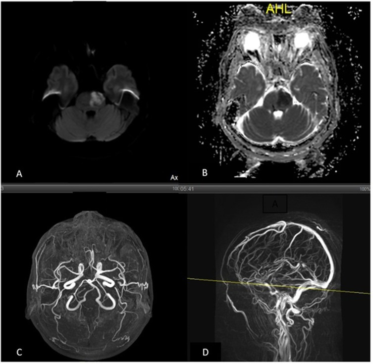
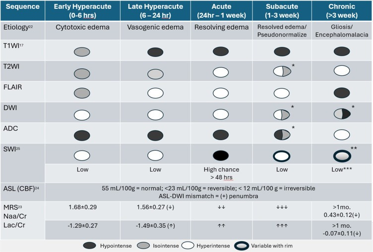

200 — Tổng quan Hệ Thần kinh / Neuro overview
Tags: tong-quan
Mức chắc chắn (certainty): tổng hợp y văn (literature synthesis).
Bảng so sánh phân biệt bắt buộc (Hệ Thần kinh & Cột sống)
| Mẫu hình (pattern) | Vị trí (location) | Gamut chính (DDx) | Phân biệt nhanh (Chốt định lượng / Tín hiệu) | Bài chi tiết |
|---|---|---|---|---|
| Khuếch tán hạn chế (DWI+/ADC−) | Nhu mô não (brain parenchyma) | Nhồi máu não cấp, Áp-xe mủ, U lympho (lymphoma), Nang thượng bì (epidermoid), Bệnh Creutzfeldt-Jakob | Theo vùng cấp máu động mạch (artery) + ASPECTS = Nhồi máu cấp; Trong lòng nang ngấm viền = Áp-xe; Ngoài trục góc cầu tiểu não = Epidermoid | 211, 213, 217 |
| Máu tụ ngoài trục: Hình liềm vs. Thấu kính vs. Rãnh não | Nội sọ (intracranial) | Dưới màng cứng (SDH), Ngoài màng cứng (EDH), Xuất huyết dưới nhện (SAH) | Hình liềm vượt khớp sọ = SDH; Hình thấu kính không vượt khớp + khoảng tỉnh = EDH; Trong bể nền/rãnh Sylvius dày ≥ 1 mm (Modified Fisher) = SAH | 212 |
| Khối ngấm thuốc dạng vòng (Ring-enhancing) | Trong trục (intra-axial) | U nguyên bào thần kinh đệm (GBM), Di căn (metastasis), Áp-xe não, Mất myelin giả u (tumefactive demyelination) | Thành dày qua thể chai + trung tâm ADC sáng = GBM; Trung tâm DWI+ sáng rực + viền kép T2 = Áp-xe; Vòng ngấm thuốc hở (open-ring) = Mất myelin (cấm mổ!) | 213, 214, 215 |
| Ngấm thuốc TIẾN TRIỂN trong trường xạ | Chất trắng quanh ổ xạ (peritumoural) | Hoại tử phóng xạ (RN), tái phát tại chỗ, giả tiến triển, áp-xe, nhồi máu bán cấp | RN: rCBV thấp + Cho thấp + lipid–lactate, thể tích tăng nhanh rồi tự thoái triển (β 2,15); tái phát: rCBV cao + Cho/NAA cao, tăng đơn điệu (β 0,68); < 12 tuần = giả tiến triển; MRI thường chỉ Sp 30% | 204, 213, 219 |
| Khối ngoài trục (Extra-axial) & Góc cầu tiểu não (CPA) | Màng não & Nền sọ | U màng não (meningioma), U dây VIII (schwannoma), Nang thượng bì (epidermoid), Nang màng nhện (arachnoid cyst) | Đuôi màng cứng + khe dịch não tủy (DNT) = Meningioma; Rộng ống tai trong = Schwannoma; Giống DNT trên T1/T2 nhưng DWI+ sáng = Epidermoid (DWI tối = Nang màng nhện) | 217 |
| Khối dựa màng não TRONG TRƯỜNG CHIẾU cũ | Màng não vùng đã xạ (liềm, vòm, cánh bướm, nền sọ) | U màng não do xạ (RIM) · u màng não tự phát · di căn màng cứng · lymphoma · SFT/hemangiopericytoma · sarcoma xương sọ do xạ | Nằm trong thể tích đã xạ + không có trên phim trước xạ + mô bệnh khác u cũ = RIM (6 tiêu chuẩn Cahan); tiềm tàng 22,9 ± 11,4 năm (12 tháng–63 năm); nhiều ổ 11,9%, tái phát 18,3%; dày xương dưới u = RIM, phá xương = sarcoma/di căn | 264, 213, 204 |
| Phá xương + khối mô mềm trong trường chiếu cũ | Nền sọ đã xạ (thân xương bướm, mỏm chân bướm, xương thái dương, xương hàm) | Sarcoma xương do xạ (osteosarcoma/fibrosarcoma) · tái phát ung thư vòm họng · di căn xương · chordoma · hoại tử xương do xạ (ORN) · viêm tủy xương | Trong trường chiếu nhưng LỆCH khỏi ổ u cũ + tiềm tàng 10–20 năm + phá vỏ/vùng chuyển tiếp rộng + khối mô mềm hạn chế khuếch tán = sarcoma; cùng ổ u cũ + ~5 năm + mô học carcinom = tái phát; mảnh xương chết + khí, không khối = ORN; sarcoma nền sọ sau xạ vòm họng: sống 2/5 năm 0%/0%, khoảng không bệnh 18,3 vs 5,6 năm | 272, 264, 384, 253 |
| Chất trắng đa ổ (Multifocal white matter) | Quanh não thất & Tủy | Xơ cứng rải rác (MS), Viêm tủy thị thần kinh (NMOSD), Bệnh mạch máu nhỏ (Fazekas) | Ngón tay Dawson vuông góc não thất + tủy < 2 đốt = MS; Tổn thương tủy dài ≥ 3 đốt (LETM) + giao thoa thị = NMOSD | 215 |
| Chất trắng KHÔNG ngấm, bất đối xứng, tiến triển | Chất trắng dưới vỏ (U-fibers) – quanh não thất | PML (JCPyV) · PML-IRIS · HIV encephalopathy · ADEM · CADASIL · hoại tử phóng xạ | Bất đối xứng + U-fibers + không ngấm + DWI sáng ở RÌA = PML (PCR JCV dịch não tủy siêu nhạy, Se > 95%); ngấm thuốc mới + phù 3–6 tuần sau ngừng thuốc/PLEX = PML-IRIS; đối xứng quanh não thất + teo não = HIVE; ngấm thuốc + sau nhiễm 1–3 tuần = ADEM | 206, 215, 214, 204 |
| Bệnh não lan tỏa sau liệu pháp tế bào (ICANS) | Chất trắng quanh não thất – đồi thị – thân não – tủy ± vỏ não ± màng não | ICANS · PRES · nhiễm trùng TKTW · độc fludarabine · nhồi máu · di căn màng não | 3–6 ngày sau CAR-T + ICE giảm/thất ngôn + MRI thường BÌNH THƯỜNG (chỉ 32,5% bất thường quanh ngày 7); phù khu trú = độ 3, lan tỏa = độ 4; tocilizumab KHÔNG dùng cho ICANS đơn độc (chỉ cho CRS đồng thời) | 1430, 1423, 211 |
| Parkinson MUỘN sau CAR-T BCMA (MNT) | Hạch nền (nhân đuôi – thể vân) ± thân não; đa số MRI bình thường | MNT do BCMA · ICANS muộn · tái phát đa u tủy trong TKTW · Parkinson nguyên phát · parkinson do thuốc · NPH · PRES | Tuần 4–8 sau CAR-T BCMA + chậm chạp/cứng đờ/mất biểu cảm/khó tìm từ + mất khứu giác; MRI bình thường 4/5 không loại trừ; dịch não tủy 42/µL (2–140), 90% lymphô bào T, 73% là CAR-T; corticoid KHÔNG hiệu quả — hóa trị nội tủy 3/5 hồi phục hoàn toàn; CARTITUDE-1 6% · CARTITUDE-4 1% | 1440, 1430, 1659 |
| Chất trắng ĐỐI XỨNG, không ngấm, chừa U-fibers | Nhân răng · thể chai · bao trong sau · quanh não thất | Độc chất (heroin hít "chasing the dragon", metronidazole, 5-FU/capecitabine, linezolid, cocaine/levamisole) · HIE · PRES · ADEM · PML (bất đối xứng) | Metronidazole: liều tích lũy ~51 g/4 tuần, khởi phát ~19 ngày, nhân răng 93% · trung não 73% · thể chai 73%, hồi phục 4–7 ngày sau ngừng, DWI thường KHÔNG hạn chế; 5-FU/capecitabine: hạn chế khuếch tán đối xứng quanh não thất/thể chai, ADC 0,3 × 10⁻³ mm²/s, hồi phục trung vị 8,5 ngày; heroin: bao trong sau + MCP + tiểu não, tử vong thể nhẹ ~10% / thể nặng ~100%; PML ăn tới U-fibers, đối xứng KHÔNG hoàn toàn | 209, 206, 215, 3035, 219 |
| Giãn não thất & Đẩy lệch cấu trúc | Hệ thống não thất | Não úng thủy tắc nghẽn, Não úng thủy áp lực bình thường (NPH), Teo não tuổi già, Thoát vị não | DESH (giãn não thất KHÔNG tương xứng: khoang đỉnh hẹp + Sylvius giãn) = iNPH; EI ≥ 0,3, z-EI > 0,42, góc thể chai < 90°, BVR AC < 1,0/PC < 1,5; tap test 30 mL (Se 71,3%/Sp 65%; + áp lực ≥ 15 cmH₂O → Se 82,5%); shunt 80% đáp ứng nhưng máu tụ dưới màng cứng 14,3% vs 2,0% (PENS), quá dẫn lưu giảm với van hấp dẫn; giãn não thất tương xứng với rãnh vỏ = teo não | 218, 3032, 3016, 252 |
| Máu trong não thất ± giãn não thất cấp | Hệ thống não thất (thất bên, III, IV) | IVH do tăng huyết áp · vỡ phình/AVM · CVST · rối loạn đông máu · chấn thương · IVH nguyên phát (~3%) | Graeb 0–12, mGS 0–32, IVH score 0–23; mỗi điểm mGS → OR 1,362 cho não úng thủy cấp; CLEAR III: mRS ≤ 3 48% vs 45% (NS) nhưng tử vong 18% vs 29%; nội soi rửa: shunt 13% vs 26%; não thất IV đúc khuôn + tĩnh mạch Galen tăng tỷ trọng + đồi thị giảm tỷ trọng = CVST, không phải IVH nguyên phát | 3034, 212, 218, 216, 3025 |
| Hạn chế khuếch tán VỎ NÃO đối xứng | Vỏ não ± hạch nền, hải mã, tiểu não | HIE sau ngừng tim · hạ đường huyết · động kinh liên tục · CJD · bệnh não gan · PRES/RCVS · MELAS | Bối cảnh ROSC + DWI sáng/ADC tối vỏ–hạch nền = HIE (0/46 ca có HSI sớm đạt kết cục tốt; DWI AUC 0,87/Se 74,2%; PV650 > 28,8%); GWR tự động AUC 0,72 < 24 giờ → 0,81 sau 96 giờ; hạ đường huyết: bảo tồn đồi thị + hồi phục sau bù glucose; CJD: cortical ribboning + hạch nền, không bối cảnh ROSC | 3035, 3033, 3031, 211 |
| Rung giật cơ (myoclonus) sau ngừng tim | Vỏ não – hạch nền – đồi thị (pulvinar) – hải mã | Status myoclonus · MSE · Lance-Adams sớm · myoclonus do thuốc (quetiapine, SSRI) · hạ Na⁺/hạ đường huyết · CJD | Status myoclonus = giật cơ TOÀN THÂN LIÊN TỤC ≥ 30 phút trong 72 giờ sau ROSC; CPC 1–2: 9,8% (myoclonus) · 5,8% (MyS/SM) · 5,7% (MSE) · 82,0% (eLAS); nền EEG mới là chốt: 1,6% (ức chế) vs 22,3% (liên tục, không cơn); HIBI lan rộng: xấu 83% vs 27% (OR 12,8); cut-off DWI 1,495/ADC 0,735 tách cơn với nhồi máu; myoclonus đơn thuần KHÔNG đủ rút điều trị | 3036, 3035, 211, 201 |
| Mủ trong não thất ± ngấm màng nội tủy | Hệ thống não thất (thất bên, III, IV) – màng nội tủy | Viêm não thất do EVD/shunt · IVH · u não thất (neurocytoma, papilloma) · nang keo thất III · khí trong não thất · áp-xe não vỡ · nhiễm trùng bẩm sinh (CMV) | Mủ = DWI sáng/ADC tối + mức dịch–mủ + ngấm màng nội tủy liên tục (DNT tự do không hạn chế khuếch tán); máu cấp cũng hạn chế khuếch tán → phải dựa T2 tối + SWI + 50–80 HU; giãn sừng thái dương = úng thủy tắc nghẽn cấp, dẫn lưu khẩn; ERI 8,6%, đổi EVD HR 3,13, AI-EVD OR 0,43; CSF WBC AUC 0,828 | 3037, 3034, 3012, 214 |
| Mất tưới máu não toàn bộ (nghi chết não) | Toàn bộ não – thân não – tuần hoàn não | Chết não (BD/DNC) · ngộ độc an thần/giãn cơ · hạ thân nhiệt · ngộ độc · nhồi máu thân não (locked-in) · hội chứng Guillain–Barré/botulism · tổn thương tủy cổ cao | Lâm sàng là chốt (hôn mê + mất mọi phản xạ thân não + test ngưng thở PaCO₂ ≥ 60 mmHg hoặc tăng ≥ 20, pH < 7,30); CTA 4 điểm (MCA-M4 + ICV không ngấm) Se 52–97%/Sp 100% (cũ) nhưng nghiên cứu tiến cứu: Se 75,5–87,3%/Sp 89,7–91,0%; CTP toàn não Se 93,6%/Sp 92,3%, CTP thân não Se 98,5%/Sp 74,4%; stasis filling + khuyết sọ = âm tính giả; AAN 2023 chỉ nhận DSA/SPECT/TCD, Đức–Ba Lan nhận CTA/CTP | 3038, 3035, 3036, 201, 211 |
| Trẻ nhỏ: mất tưới máu não + hộp sọ còn giãn | Toàn bộ não – thân não ở trẻ sơ sinh/trẻ em | Chết não ở trẻ · ngộ độc nọc rắn (krait) · GBS/botulism · hạ thân nhiệt · rối loạn chuyển hóa · còn an thần/giãn cơ | Tuổi quyết định khoảng quan sát: ≤ 30 ngày: 24 giờ, 30 ngày–18 tuổi: 12 giờ, đẻ non: không chẩn đoán; test ngưng thở PaCO₂ ≥ 60 mmHg hoặc tăng ≥ 20; xạ hình HMPAO Se 0,99/Sp 0,97 (bằng chứng thấp); CTA ICV–SPV Se 88,4%, khuyết sọ còn 89,5% (A60-V60 68,4%); thóp mở/shunt/khuyết sọ = âm tính giả; Doppler hốc mắt OA-RI ≥ 0,77 (khám phá) | 3040, 3038, 3039, 201 |
| Đầu catheter trung tâm sai vị trí ở trẻ (catheter tip malposition) | Tĩnh mạch chủ trên – nhĩ phải – tĩnh mạch azygos (trẻ) | Quá nông (huyết khối/hẹp tĩnh mạch) · Quá sâu (loạn nhịp, thủng nhĩ, chèn ép tim) · Lạc azygos/tĩnh mạch ngực trong · Sang bên đối diện · Ra ngoài lòng mạch | Carina = T4 ở 98% nhũ nhi; đầu catheter 10 mm (4–15 mm) dưới carina là đúng, > 22 mm = nghi vào nhĩ phải; TTE đúng 91% (96% ở 0–3 tháng) so với TEE; ECG lòng mạch: 39,29% ca có sóng P vẫn quá sâu → phải xác nhận bằng hình ảnh; huyết khối liên quan CVC 26,60% | 3044, 3043, 093, 015 |
| Bóng catheter trong nhĩ phải ± sùi/huyết khối | Nhĩ phải – tĩnh mạch chủ trên (đầu xa shunt VA) | Viêm nội tâm mạc do shunt · huyết khối quanh catheter · di trú đầu xa · tăng áp lực tĩnh mạch hệ thống · viêm thận do shunt · PE/tăng áp phổi | Shunt “vẫn thông” mà ICP cao → đo CVP/JVP (ca: JVP 12–13 mmHg); VA ít tắc hơn VP: OR 0,49 nhưng mổ lại OR 0,73 (I² 91%), tử vong OR 1,93 (ns); huyết khối 0,3% lâm sàng vs tới 60% tử thiết; viêm thận do shunt 0,8%, chỉ kháng sinh 0/9 hồi phục hoàn toàn; nhiễm = rút shunt + kháng sinh 6 tuần | 3041, 3039, 093, 3037 |
| Nang dịch khu trú quanh đầu catheter shunt | Khoang phúc mạc (đầu xa VP shunt) ± não thất | Nang giả phúc mạc vô khuẩn · nang giả nhiễm/áp-xe · cổ trướng DNT · cổ trướng khu trú do dính · máu tụ/lymphocele · nang phần phụ · áp-xe do thủng tạng | Đầu catheter nằm TRONG khối dịch khu trú = nang giả (dịch tự do = cổ trướng); hình ảnh KHÔNG phân biệt vô khuẩn/nhiễm → DNT + cấy đầu catheter; nhiễm: sốt 70,7% vs 16,4%, CRP OR 64,1; nang giả 1–4,5%; ngoại hóa vs đổi vị trí: tái phát 24,1% vs 25,0% (NS); nhiễm = rút toàn bộ + EVD, không đổi vị trí | 3039, 3037, 3034, 3026, 100 |
| Thiếu máu bán cầu sau bít động mạch cảnh trong (post-PAO hypoperfusion) | Bán cầu cùng bên – vùng nước ACA–MCA / MCA–PCA – đồi thị–bao trong (nhánh xuyên) | Giảm tưới máu (huyết áp tụt, mất nước, thiếu máu) · thuyên tắc (coil/huyết khối) · luxury perfusion · hội chứng tăng tưới máu · cơn động kinh/Todd · phình mới sau bít | Dải nhồi máu vùng nước + CTA không tắc thân mạch = giảm tưới máu (nâng MAP, không tiêu sợi huyết); BTO âm + bít đột ngột vẫn 26% đột quỵ / 12% tử vong; đột quỵ muộn sau BTO 5–10%, di chứng 4,7%; phình mới tới 20% | 3059, 3050, 211, 262 |
| Đau đầu mới + co giật + huyết áp tăng trong 0–14 ngày sau CEA/CAS, CT SẠCH | Bán cầu VỪA TÁI THÔNG – thùy trán/thái dương, vùng chuyển tiếp; tiểu não đối bên (diaschisis) | CHS (tăng tưới máu) · chuyển dạng xuất huyết của nhồi máu · ngấm cản quang tồn lưu · PRES · tắc lại · co giật do hạ Na/nhiễm trùng | CT sạch ngay sau can thiệp rồi xuất huyết THÙY ngày 1 = CHS (< 3%, xuất huyết ~1% – tử vong 26%); HATT ≤ 120 / < 110 mmHg vẫn xảy ra; CTP/ASL/SPECT tăng CBF + giảm tưới máu tiểu não đối bên; co giật 0,5%, NCSE tử vong 52% | 3060, 3059, 262, 249 |
| Tổn thương ống sống theo 3 khoang | Cột sống – Tủy sống (spine) | Ngoài màng cứng (thoát vị đĩa, di căn), Trong màng cứng-ngoài tủy (schwannoma, meningioma), Nội tủy (ependymoma, viêm tủy) | Đẩy lệch túi màng cứng = Ngoài màng cứng; Mở rộng khoang dưới nhện hình chén (meniscus) = Trong màng cứng-ngoài tủy; Phình rộng tủy = Nội tủy | 220 |
| Tăng T2 ĐỐI XỨNG cột sau tủy ("chữ V ngược") | Tủy cổ ± ngực, cột sau (fasciculus gracilis/cuneatus) | Ngộ độc N₂O (thiếu B₁₂ chức năng) · thiếu B₁₂ thật · thiếu đồng · HIV vacuolar myelopathy · tabes dorsalis · tủy mềm do xạ · viêm tủy/NMO · MS | B₁₂ bình thường ở 95% ca N₂O → KHÔNG loại trừ; homocystein trung vị 50 µmol/L (32–114), MMA 0,68 (0,18–3,16); Hcy Se 95%/Sp 13%, MMA 93%/45%, B₁₂ 22%/87%; MRI bất thường chỉ 60–73%; DWI không hạn chế (khác nhồi máu "owl's eye"); thiếu đồng: MRI chỉ bất thường 47%, T2-TSE có thể âm — phải chụp STIR; cytopenia 78% | 265, 226, 215, 280, 281 |
| Tổn thương thân đốt sống & Đĩa đệm | Cột sống | Viêm đĩa đệm-đốt sống vi khuẩn, Lao cột sống (Pott), Di căn cột sống, Xẹp đốt sống loãng xương | Phá hủy đĩa đệm sớm = Vi khuẩn; Bảo tồn đĩa sớm + áp-xe lạnh vôi hóa = Lao; Chừa đĩa đệm + hủy cuống cung (mất mắt cú) = Di căn | 221, 222 |
| Ổ dịch ngoài màng cứng sau loét tì đè | Ống sống cùng cụt–thắt lưng (ngoài màng cứng) | Áp-xe ngoài màng cứng · máu tụ ngoài màng cứng · di căn/u · mủ dưới màng cứng · phlegmon · thoát vị đĩa đệm | Viền ngấm + DWI sáng/ADC tối + sốt = áp-xe; không hạn chế khuếch tán + khởi phát đột ngột = máu tụ; tam chứng chỉ 8–15%, sốt ~25%; MRI toàn bộ cột sống, KHÔNG chọc dò tủy sống; liệt > 24–36 giờ khó hồi phục | 258, 222, 228 |
| Thoát vị đĩa đệm thắt lưng & thoái hóa đĩa–sụn tận cùng | Cột sống thắt lưng (lumbar) | Hình thái: phình (bulge) · lồi (protrusion) · thoát ra (extrusion) · mảnh rời (sequestration); Phân độ Pfirrmann I–V; Modic 1/2/3; Hẹp ống sống (Schizas A–D) | Đáy < chiều cao = extrusion; mảnh mất liên tục = sequestration; nhân T2 xám–đen + mất ranh giới = Pfirrmann IV–V; Modic 1 = T1 tối/T2 sáng (hoạt tính, tái phát OR 2,97) vs Modic 2 = T1 sáng; mất rễ + mất mỡ ngoài màng cứng = Schizas D; vị trí → rễ bị chèn (trung tâm→đuôi ngựa; dưới khớp→rễ đi ngang; lỗ/ngoài lỗ→rễ đi ra) | 228, 220, 222 |
| Tín hiệu tủy sau chấn thương (cord signal) | Tủy sống | Phù tủy, Xuất huyết tủy, Đứt tủy, SCIWORA (CT bình thường) | T2/STIR sáng đơn thuần = phù (tiên lượng khá); T2 tối + "blooming" GRE/SWI = xuất huyết (xấu); CT bình thường + dấu tủy = SCIWORA — chấm AIS A–E (chốt sacral sparing S4–5) | 223 |
| Xấu đi sau giai đoạn ổn định + khoang dịch nội tủy | Tủy sống (nội tủy) — sau chấn thương | Giãn tủy sau chấn thương (PTS) · u nội tủy có nang · SDAVF · dính màng nhện/web lưng · myelomalacia (không phải syrinx) | Khoang T2 = DNT + lan dọc + tủy giãn sau chấn thương = PTS (khoảng 20% người chấn thương tủy; bóc dính cải thiện < 50%, S-S bypass 71,9%); nốt ngấm trong khoang = u; DWI hạn chế = áp-xe; T2 sáng không khoang + tủy teo = myelomalacia | 254, 223, 226, 220 |
| Tủy bị đẩy ra TRƯỚC + lõm mặt LƯNG (dấu scalpel) | Tủy ngực trên–giữa T1–T8 | Màng nhện lưng (SAW) · nang nhện lưng · thoát vị tủy ra trước · dính màng nhện · u nội tủy | Lõm mặt lưng + khoang DNT sau giãn + dải màng trên 3D-CISS/CT tủy + xung CSF mất dưới chỗ lõm = SAW (chỉ 1,4% cơ sở dữ liệu giãn tủy; syrinx 53%; trễ chẩn đoán 12,5 tháng; tJOA 8 → 9,2 sau cắt màng); tủy sát màng cứng BỤNG, mất DNT trước = VCH; ngấm thuốc trong tủy = u | 255, 254, 226, 220 |
| Liệt cấp sau mổ/đặt stent ĐMC + DWI hạn chế 2/3 trước tủy | Tủy ngực–thắt lưng, lãnh thổ động mạch tủy trước (ASA) | Nhồi máu tủy sau mổ ĐMC/TEVAR/EVAR · máu tụ sau dẫn lưu DNT · FCE · NMO/MOG · SDAVF | DWI sáng/ADC thấp + T2 2/3 trước + owl's eyes = nhồi máu ASA (AKA trái 74%, T9–T10 hay gặp, 0,75–0,88 mm; SCI ~10% mổ hở / ~3,5% nội mạch, vĩnh viễn 3,3%, Crawford II 13,4%; MAP 85–90, DNT < 10 mmHg, NNT 10); khối chèn ép + màng cứng căng = máu tụ; dọc ≥ 3 đốt trung tâm + NMO/MOG + = viêm tủy | 256, 226, 258, 254 |
| Hội chứng tủy KHÔNG hoàn toàn (theo mặt cắt ngang) | Tủy sống (myelopathy) | Tủy trung tâm (CCS) · tủy trước (ASA) · Brown-Séquard (hemisection) · tủy sau · nón tủy/đuôi ngựa | Yếu TAY > chân + chênh UEMS–LEMS ≥ 10 điểm = tủy trung tâm (hồi phục ~90%/3 năm); liệt + mất đau–nhiệt hai bên mà CÒN cảm giác sâu = tủy trước; mất sâu CÙNG bên + mất đau–nhiệt ĐỐI bên = Brown-Séquard; mất sâu hai bên, còn vận động = tủy sau (< 1%, dễ bỏ sót) | 225, 223, 220 |
| Nhân tuyến giáp & Hạch cổ (ACR TI-RADS) | Tuyến giáp & Cổ (thyroid-neck) | Ung thư nhú (PTC), nang thể, keo lành, giả nhân Hashimoto, hạch di căn | Đặc + rất giảm + cao-rộng + đa cung + vi vôi ≤ 1 mm (≥ 7đ) = TR5; bọt biển = TR1 (DỪNG); hạch mất rốn + Tg rửa = di căn (bỏ ngưỡng mm!) | 230 |
| Phù não sau có hồi phục vs co mạch não có hồi phục | Nhu mô não (vỏ–dưới vỏ) & mạch não | PRES (THA cấp/thuốc độc), RCVS (đau đầu sét đánh tái diễn), nhồi máu, viêm não HSV | Phù đối xứng dưới vỏ chẩm-đỉnh + ADC TĂNG = PRES (CT chỉ nhạy 46%/MRI 98%); ADC TỐI theo lãnh thổ = nhồi máu; "chuỗi hạt" co mạch đa ổ, hồi phục < 3 tháng = RCVS (RCVS2 ≥ 5; MRA có thể âm tuần đầu) | 219 |
| Đau đầu sét đánh (thunderclap) | Khoang dưới nhện & mạch máu não | SAH vỡ phình · RCVS · CVST · bóc tách cổ · pituitary apoplexy · viêm màng não · hạ áp lực DNT · TCH nguyên phát | CT máu bể nền 60–80 HU + CTA/DSA = SAH; TCH tái diễn + co mạch "chuỗi hạt" hồi phục < 3 tháng + RCVS2 ≥ 5 = RCVS; khuyết thuốc xoang trên CTV/MRV = CVST; TCH + sụp thị trường/liệt vận nhãn = pituitary apoplexy | 227, 219, 216, 212 |
| Hẹp/huyết khối mạch cổ sau đau cổ – chấn thương | Động mạch cảnh trong & động mạch đốt sống đoạn ngoài sọ | Bóc tách tự phát · BCVI (Denver I–V) · xơ vữa · loạn sản cơ–sợi (FMD) · viêm mạch · thiểu sản động mạch đốt sống | Hẹp hình nón/đuôi chuột + vách nội mạc/hai lòng + dải T1 sáng trong thành = bóc tách; Denver I–V: kháng huyết khối 24–48 giờ, CTA lặp 7 ngày + 3 tháng; CTA gộp Se 66% → CTA âm không loại trừ (DSA/MRA) | 247, 248, 231, 227 |
| Túi phình ĐÃ can thiệp, hình ảnh thay đổi khi theo dõi | Mạch não — túi phình đã coil/stent/flow diverter | Tái phát thật (coil compaction, regrowth) · tồn dư ổn định (RROC II) · artifact MRA (CoCr) · hẹp trong stent thật · huyết khối túi · coil extrusion · túi de novo | So phim NGAY sau can thiệp: RROC I/II → III = compaction, IIIb = can thiệp lại (can thiệp lại 12,1%; túi vỡ 18,1% vs chưa vỡ 8,5%; muộn nhất 100,6 tháng); "hẹp mạch mẹ" trên TOF quanh CoCr = giả (Sp 0,08 vs nitinol 0,60); ACom chỉ black-blood thấy (7 ca), thân nền chỉ TOF thấy (5 ca) | 257, 207, 241, 248 |
| Mắt đỏ + lồi + tiếng thổi sau chấn thương sọ–mặt | Xoang hang & động mạch cảnh trong đoạn hang | CCF trực tiếp (Barrow A) · CCF gián tiếp (B–D) · huyết khối xoang hang · TED · viêm mô tế bào ổ mắt | Xoang hang đổ đầy sớm + SOV > 5 mm + thổi = CCF; DSA 4 mạch chốt Barrow; A → can thiệp động mạch (stent phủ/coil), B–D → đường tĩnh mạch; dẫn lưu vỏ não = nguy cơ xuất huyết; CCF 0,2% chấn thương sọ, 3,8% vỡ nền sọ | 249, 248, 423, 216 |
| Suy tuyến yên sau sinh & hố yên trống | Tuyến yên – vùng yên (sellar region) | Sheehan cấp/mạn · viêm tuyến yên lympho bào · đột quỵ tuyến yên · macroadenoma · hố yên trống nguyên phát | PPH/choáng + vô sữa + hạ Na + tuyến yên to không có khối = Sheehan cấp; teo tuyến + DNT lấp > 50% hố yên = hố yên trống; cuống dày + đái tháo nhạt + ngấm mạnh = viêm tuyến yên; T1 sáng + mức dịch–dịch = đột quỵ tuyến yên | 246, 245, 432 |
| Hạ natri máu MUỘN ngày 5–10 sau mổ tuyến yên | Vùng yên – cuống yên – trục hạ đồi–tuyến yên | SIADH muộn · mất muối não (CSW) · suy thượng thận · suy giáp · hạ natri do truyền dịch nhược trương · giả hạ natri | Na < 135 sau ngày 3 + đẳng thể tích + osm niệu > 100 + Na niệu > 30–40 = SIADH; 44,3% ca tái nhập viện 30 ngày; nadir trung vị ngày 8, 129 mmol/L; hạn chế nước 1.000 mL/ngày × 7 ngày → 6,9% vs 19,2%; giới hạn sửa +10 mmol/L/24 giờ (+8 nếu nguy cơ ODS); tuổi > 60 OR 2,09, tràn khí nội sọ OR 3,28 | 1722, 1710, 1755 |
| Đa niệu – uống nhiều ở TRẺ + mất điểm sáng / cuống yên dày | Vùng yên – cuống yên – dưới đồi | ĐTN trung ương (vô căn, LCH, u mầm, u sọ hầu, sau mổ) · ĐTN thận · uống nhiều nguyên phát · gián đoạn cuống yên | Đa niệu > 2,5 L/m²/ngày hoặc > 3 mL/kg/giờ; copeptin sau NaCl 3% < 6,5 pmol/L** = ĐTN trung ương (Se/Sp 100%); **mất điểm sáng T1 không đặc hiệu**; **cuống > 3 mm phải tầm soát u, ≥ 6,5 mm + nam + ≥ 2 thiếu hormone = nguy cơ ung thư cao; vô căn chỉ sau MRI 6 tháng × 2–3 năm | 1644 |
| Co mạch/hẹp mạch não đa ổ (PACNS vs RCVS) | Mạch máu não (intracranial vessels) | PACNS (viêm mạch TKTW nguyên phát), RCVS (co mạch có hồi phục), xơ vữa nội sọ, bóc tách, moyamoya, viêm mạch hệ thống | HR-vwMRI: ngấm ĐỒNG TÂM mạnh + KHÔNG hồi phục = PACNS (sinh thiết não–màng não; corticoid + cyclophosphamide); hẹp từng đoạn "chuỗi hạt" hồi phục < 3 tháng + ngấm NHẸ = RCVS (RCVS2 ≥ 5; nimodipine, TRÁNH corticoid — điều trị ngược nhau!) | 229, 241, 242, 219, 227 |
| Hẹp mạch não SAU CHẤN THƯƠNG (PTV) | Mạch máu não (sau TBI, trẻ em) | PTV liên quan tSAH · PTV sau máu tụ/đụng dập · hyperemia · thiếu máu do ICP cao/CPP thấp · co thắt sau aSAH | TCD tăng vận tốc theo xu hướng + Lindegaard > 3 + CTA hẹp lòng + HỒI PHỤC khi chụp lại = PTV (trẻ 18–45%; GCS ≤ 8 → 33,5%, đỉnh ngày 5–7); Lindegaard < 3 + lòng mạch bình thường = hyperemia; CTA ngày đầu âm KHÔNG loại trừ | 239, 219, 241, 231 |
| Tăng T2 nội tủy nón/tủy ngực dưới ± ngấm "cuống lá" | Tủy sống (nội tủy) | Sán máng tủy · NMOSD/viêm tủy cắt ngang · SDAVF · u nội tủy · nhồi máu tủy | Ngấm nốt–đường ngoại vi quanh đường sáng trung tâm + dịch tễ nước ngọt + ELISA DNT = sán máng (eosinophil DNT chỉ 40–50%, trứng phân/niệu thường âm); flow void + phù lan dài = SDAVF; khối khu trú bờ rõ = u | 243, 226, 215, 220 |
| Chấn thương đầu ở trẻ: máu tụ ngoài trục & DAI | Nội sọ (intracranial, trẻ) | EDH (thấu kính) vs SDH (liềm) vs tSAH vs đụng dập vs DAI vs phù lan tỏa; AHT/NAT | Thấu kính + dừng ở đường khớp sọ = EDH; liềm + vượt khớp = SDH; vi xuất huyết thể chai/cuống não trên SWI = DAI (CT thường âm tính); SDH nhiều tầng + xuất huyết võng mạc ở < 2 tuổi = AHT/NAT | 224 |
| Chấn thương đầu ở trẻ có shunt hoặc rối loạn đông máu | Sọ – não & đường shunt (trẻ) | EDH · SDH cấp · SDH mạn có sẵn · shunt malfunction · não thất khe (SVS) · máu tụ tiến triển do đông máu | So CT nền: não thất giãn = malfunction; khe + đau đầu tư thế = SVS; SDH mạn canxi hóa > 100 HU, không to hơn = có sẵn; shunt GCS ≥ 14: ciTBI 1% vs 0,9% nhưng CT 46% vs 35%; INR > 1,2 hoặc Plt < 100 × 10³/µL → chụp lại 6–24 giờ | 251, 224, 232, 234 |
| Khối nội tủy ngấm vòng có "dấu bia" (T2 tối + lõi không ngấm) | Tủy sống (nội tủy) | Lao nội tủy (SIMT) · ependymoma/astrocytoma · áp-xe nội tủy · sán máng tủy · NMOSD (vòng hở) | Dấu bia 78% ca SIMT + bối cảnh lao + tổn thương nhỏ lại sau ATT = lao (chỉ 45% có lao phổi; 2/100.000 ca lao); bờ mờ lệch tâm = astrocytoma; ngấm nốt–đường "cuống lá" + dịch tễ nước ngọt = sán máng; phá đốt–đĩa đệm = Pott, không phải nội tủy | 250, 243, 214, 222 |
| Đau lưng + sốt sau đặt catheter ngoài màng cứng (sản khoa/hậu phẫu) | Khoang ngoài màng cứng – ống sống (epidural space) | Áp-xe ngoài màng cứng · máu tụ · khí ngoài màng cứng (pneumorrhachis) · viêm màng não sau chọc · viêm đĩa đệm | Đau lưng tăng dần + CRP/PCT tăng + viền ngấm/DWI sáng = áp-xe (sốt chỉ ~25–50%, 3–7 ngày sau đặt; catheter > 3 ngày là nguy cơ); khởi phát tức thì trong lúc bơm + DWI KHÔNG hạn chế = khí, CT xác nhận; không chọc dò tủy sống khi nghi áp-xe; kháng sinh ≥ 6 tuần, mổ khi có thiếu hụt | 3012, 258, 222, 228 |
| Yếu hai chân + bí tiểu sau mổ cột sống | Đuôi ngựa (cauda equina), hậu phẫu | Tụ máu ngoài màng cứng · tụ máu DƯỚI màng cứng · phù do thao tác · áp-xe · đĩa tái phát/mảnh sót · u tiến triển | PVR > 200 mL = ngưỡng nghi CES; khối + tín hiệu theo tuổi máu = tụ máu → mổ lại (2,3% ca giải ép; THA trước mổ OR 6,24); vỏ + DWI = áp-xe; màng cứng căng/tím/mất đập sau giải ép ngoài màng cứng = tụ máu dưới màng cứng; giải ép < 24–48 giờ | 3013, 3012, 228, 258, 223 |
| Đau đầu thế đứng sau chọc dò màng cứng | Khoang dưới nhện – nội sọ | PDPH · tụ máu dưới màng cứng · huyết khối xoang tĩnh mạch não · khí nội sọ · viêm màng não · tiền sản giật | Đau thế đứng dịu ≤ 15 phút khi nằm + chọc dò ≤ 5 ngày = PDPH; đau mất tính thế đứng + hình liềm 60–80 HU = SDH; khí −1000 đến −400 HU = khí nội sọ; sốt + dịch não tủy viêm = viêm màng não; CT âm tính không loại trừ CVST → CTV/MRV | 3014, 3012, 208 |
| Đau đầu thế đứng KHÔNG có tiền sử chọc dò (SIH) | Khoang dưới nhện – ống sống ngực trên – nội sọ | SIH (rò type 1–4) · PDPH · CVST · viêm màng cứng tăng sinh/IgG4 · di căn màng cứng · dẫn lưu quá mức van shunt | ≥ 1 dấu SEEPS (dịch dưới màng cứng, dày màng cứng, giãn xoang, cương tuyến yên, tụt não) + Bern ≥ 5; Bern 0 KHÔNG loại trừ (nhạy ngưỡng ≥ 3 chỉ 42,2%); CT myelography động định vị 95,7%, ngực trên 70%; MR myelography chỉ khớp chính xác 12,5%; type 3 (rò tĩnh mạch) mổ ngay — EBP không hiệu quả | 3016, 3014, 3012, 208 |
| Đau dai dẳng/tái phát sau mổ cột sống (FBSS) | Tầng đã mổ + tầng kế cận | Sẹo xơ ngoài màng cứng · đĩa tái phát · mảnh đĩa sót · thoái hóa tầng kế cận · giả khớp · long vít/hỏng dụng cụ · nhiễm trùng · mổ sai tầng | Ngấm thuốc đều, sớm, không choán chỗ = sẹo; ngấm rìa + liên tục khoảng đĩa = đĩa tái phát; halo quanh vít/gãy thanh trên CT = dụng cụ; DWI sáng + CRP tăng = mủ; trượt đốt trên/dưới dụng cụ = tầng kế cận | 3015, 3013, 228, 222 |
| Hỏng shunt não thất muộn (đau đầu/bụng to ở trẻ có shunt) | Sọ – não – ổ bụng (đường shunt) | Tắc đầu gần · Gãy/ly giãn catheter · Nhiễm trùng shunt · Pseudocyst/ascites · Di trú đầu xa · Dẫn lưu quá mức (SVS) · Bệnh nội khoa thường gặp | Hỏng 30–40% năm đầu, ~50% năm thứ hai; tắc đầu gần > 50%; gãy: khoảng hở lớn ở cổ/ngực + đầu xa trôi; ly giãn: tách mối nối + canxi hóa; nhiễm trùng < 6 tháng, cấy đầu catheter nhạy hơn DNT**; **pseudocyst 1–4,5% trẻ, đầu catheter trong nang + thuốc khu trú**; **SVS ~10% sau 10 năm, tăng 3 cmH₂O** | 252, 251, 234, 244 |
| **Shunt thất bại + ổ bụng không dùng được** | Màng phổi (VPL) – nhĩ phải (VA) | Tràn dịch do shunt (VPL) · nhiễm trùng khoang màng phổi · rò shunt–phế quản · dẫn lưu quá mức/nắp sọ lún · huyết khối nhĩ · viêm nội tâm mạc · CTEPH · VA "thông nhưng không dẫn lưu" do CVP cao | **Dịch màng phổi nhỏ, không triệu chứng = shunt đang chạy, KHÔNG chọc**; **tràn dịch có triệu chứng 20% (trẻ, nửa là nhũ nhi) vs 4,5% (người lớn)**; **sùi van ba lá + cấy máu (+) = IE → rút shunt**; **JVP 12–13 mmHg + sức cản đầu ra 20 cmH₂O = VA mất chênh áp**; **CT liều cực thấp 0,16 mSv thay shunt series 0,25 mSv** | 3002, 252, 251, 093 |
| **Chảy dịch mũi/tai một bên sau chấn thương nền sọ** | Nền sọ trước/giữa – màng cứng | Rò CSF · viêm mũi dị ứng · viêm xoang · polyp/màng não thoát vị · nang nhầy · vỡ sọ tiến triển | **Beta-2 transferrin dương + khuyết xương khớp bên = rò CSF**; **HRCT 1–2 mm định vị ~70%**; **MRI T2 CISS/DRIVE thấy cuống màng não**; **khí nội sọ = yếu tố tiên đoán độc lập**; **không sinh thiết khối mũi khi chưa loại trừ thoát vị** | 231, 232, 244 |
| **Chảy dịch tai + vỡ xương đá (trẻ)** | Xương thái dương – tai giữa | Rò CSF qua xương đá (OCV/OCS) · hemotympanum · viêm tai giữa · cholesteatoma · khuyết tegmen tự phát · rò do thủ thuật | **Beta-2 transferrin = chốt**; **pneumolabyrinth + đường vỡ qua vỏ mê đạo = OCV, nguy cơ rò OR 5,1**; **chảy mũi "nghịch thường" qua vòi nhĩ**; **rò > 10 ngày = vá | 208, 244, 235, 236 |
| Mờ xương chũm + mòn vách & biến chứng nội sọ | Xương thái dương – hố sau (temporal bone) | Viêm xương chũm cấp biến chứng (CAM): tụ mủ ngoài/dưới màng cứng, áp-xe não, huyết khối xoang sigma–ngang (OLST), viêm màng não; viêm chũm ẩn (masked) | Mờ chũm + mòn vách xoang sigma/tegmen + khuyết thuốc trên MRV = OLST; DWI sáng/ADC tối + viền ngấm = áp-xe não; soi tai bình thường KHÔNG loại trừ (viêm chũm ẩn ở người già/suy giảm miễn dịch); CRP ≥ 12 mg/dL gợi ý CAM | 236, 235, 217 |
| Liệt dây thần kinh sọ sau viêm tai | Đỉnh xương đá – tai trong – ống Dorello (petrous apex–inner ear) | Gradenigo (VI + V) · liệt VII do AOM · viêm mê nhĩ (VIII) · huyết khối xoang hang · u nền sọ | Tam chứng Gradenigo đầy đủ chỉ 22% → hỏi song thị + khám dây VI mọi ca AOM có đau sâu; CT mòn đỉnh xương đá/MRI ngấm thuốc = viêm đỉnh xương đá; T1+C ngấm ốc tai = viêm mê nhĩ; liệt VII + AOM phải loại trừ viêm chũm trước khi gọi Bell's | 237, 236, 238 |
| Mất tín hiệu T2 tai trong & nghe kém tiếp nhận sâu | Tai trong – mê đạo (labyrinth) | Xơ hóa mê đạo (LO) · viêm mê đạo cấp · dị tật Michel/ốc tai không phát triển · xơ cứng tai thể ốc tai · u dây VIII · cholesteatoma rò mê đạo | CT bình thường KHÔNG loại trừ (giai đoạn xơ chỉ mất T2); 3D T2 mất tín hiệu dịch theo vòng ốc tai/tiền đình = LO; T1+C ngấm mê đạo = viêm cấp; không thấy cấu trúc ốc tai + bẩm sinh = Michel; khối IAC ngấm thuốc = schwannoma | 205, 237, 217, 720 |
| Tăng áp lực nội sọ (ICP) ở trẻ | Nội sọ – khoang dịch não tủy | Khối choán chỗ · phù lan tỏa · não úng thủy · huyết khối xoang · tăng ICP "giả" (IIH) | ICP > 20 mmHg kéo dài > 5 phút = ngưỡng điều trị; CPP = MAP − ICP, tối thiểu 40–50 mmHg; sóng ICP P2 > P1 = cạn dự trữ dù ICP thấp; ICP > 20 mmHg xấu bất kể CPP (vùng CPP an toàn 56–89 mmHg); ONSD ≥ 5,5 mm → ICP ≥ 20 (Se 100%/Sp 75%) nhưng KHÔNG thay thế monitor | 234, 224, 218 |
| Đau đầu + cơn giống đột quỵ + co giật NHIỀU NĂM sau xạ trị não | Vỏ não – màng mềm trong trường chiếu cũ (temporal–parietal–occipital) | SMART · tái phát u/pseudoprogression · hoại tử xạ · PRES · LMD · trạng thái động kinh/liệt Todd · nhồi máu · MELAS | Ngấm vỏ–màng mềm dạng cuộn MỘT BÊN, đúng trường chiếu, KHÔNG theo lãnh thổ mạch, hồi phục 4–12 tuần = SMART; latency 1–37 năm (trung bình 9,5); DWI T2 shine-through, ADC không giảm; CSF âm tính; tan sau corticoid → KHÔNG xạ lại, KHÔNG sinh thiết não | 259, 204, 3031, 219, 211, 214 |
| FLAIR sáng quanh não thất ĐỐI XỨNG nhiều tháng–năm sau xạ não | Chất trắng quanh não thất – chất trắng sâu trong trường chiếu (periventricular/deep white matter) | RIL (bệnh não chất trắng do xạ) · bệnh mạch nhỏ (THA/ĐTĐ) · tái phát u lan tỏa · PML · bệnh não do MTX/CAR-T · HIVE · hủy myelin thẩm thấu | Đối xứng + KHÔNG ngấm + KHÔNG choán chỗ + TE O não + chừa sợi U dưới vỏ/thể chai/vỏ = RIL; Scheltens sửa đổi ≥ 10; RIL 54,3% người sống > 30 tháng, tích lũy 21/42/48% ở 12/36/60 tháng; ngấm/choán chỗ/rCBV cao = tái phát, không phải RIL; HA-WBRT không bảo vệ khỏi RIL lan tỏa | 261, 204, 259, 206, 3031 |
| Đốm tối mới trên SWI/T2* trong não đã xạ, không ngấm, không phù | Não trong trường chiếu (thùy, nhân xám, thân não–tiểu não) | Hang mạch do xạ (RICM) · vi chảy máu do xạ · vôi hóa · di căn chảy máu (melanoma) · u thứ phát do xạ · DVA đi kèm | Vòng hemosiderin KÍN + popcorn + không ngấm/không phù = hang mạch; đốm < 5 mm nhiều ổ, tăng theo thời gian = vi chảy máu**; tích lũy **5,6/14/43% ở 3/5/10 năm**, FHD **41,6% ở nhóm xạ vs 0% không xạ**, chỉ **15,8–19,8%** trùng vị trí trường chiếu; **ngấm thuốc + phù + lớn nhanh = tái phát/u thứ phát**, không phải hang mạch; **CT để loại vôi hóa** | 1797, 204, 261, 268 |
| **Tăng đậm độ đối xứng ở nhân xám sâu + chất trắng quanh não thất TRONG trường chiếu xạ** | Đồi thị – nhân đậu – nhân đuôi – trung não – chất trắng quanh não thất (trong thể tích đã chiếu) | **Vôi hóa do xạ (mineralizing microangiopathy)** · Fahr/PFBC · suy cận giáp · mineralizing angiopathy ở nhũ nhi · nhiễm trùng bẩm sinh · tái phát u/hoại tử xạ | **CT tăng đậm độ + phân bố khớp trường chiếu + T1 có thể sáng + QSM GIẢM tín hiệu (canxi nghịch từ) = vôi hóa do xạ**; **SWI một mình KHÔNG phân biệt** với vi chảy máu (85% người sống sót ALL sau 18–24 Gy có vi chảy máu, **24 Gy vs 18 Gy RR 5,0**); **ngấm thuốc/phù/choán chỗ = tái phát**, không phải di chứng; **không sinh thiết** tổn thương vôi hóa đơn thuần | 1828, 1797, 261, 268 |
| **Hẹp–tắc mạch LỚN dài, nhẵn, KHÔNG vôi nhiều năm sau xạ não** | ICA tận – M1 – A1 (circle of Willis) trong trường chiếu | **Bệnh mạch lớn do xạ (ORV/hội chứng moyamoya do xạ)** · moyamoya nguyên phát · xơ vữa nội sọ · PACNS · RCVS · bóc tách · co thắt sau SAH | **Hẹp dài–nhẵn–không vôi đúng trường chiếu + thành mạch DÀY/NGẤM ĐỒNG TÂM trên HR-vwMRI = bệnh xạ**; latency **2–25 năm** (tới 30 năm); liều–đáp ứng **0,2% (30 Gy) · 1,3% (45 Gy) · 4,4% (54 Gy)**; **một bên vẫn là bệnh xạ**; **thiếu "khói thuốc" không loại trừ**; **nhồi máu RANH GIỚI + CVR type III (steal) = dự trữ cạn**; tránh **tụt HA/giảm CO₂** khi mổ | 262, 261, 241, 259, 204, 211, 242 |
| **Chảy máu mũi/miệng tái phát ở người đã xạ cổ** | Cảnh ngoài sọ (cảnh trong C1–C4, cảnh chung) + mô hoại tử quanh mạch | **CBS (giả phình/thoát mạch)** · giả phình nhánh cảnh ngoài (hàm trong) · u tái phát xâm lấn mạch · hoại tử xương thái dương/hốc mũi · CCF · chảy máu niêm mạc u | **Sentinel bleed (chảy thoáng qua tự cầm) + xạ cổ + rò hầu–da = CBS, phải CTA/DSA ngay**; **túi giả phình ngấm cùng thì lòng mạch + khí sát thành mạch = đe dọa vỡ**; CBS **0,8%** đoàn hệ hiện đại, tích lũy **5%**; can thiệp cầm máu **95%** nhưng **tái chảy 16%**, **sống 6 tháng 28%**; **stent bảo vệ 0% đột quỵ vs bít cảnh trong 15,4%** | 263, 260, 3046, 249, 3059 |
| **Phù gai thị hai bên ở người lớn** | Gai thị – đầu thần kinh thị | IIH · **tăng áp lực THỨ PHÁT (thuốc, thiếu máu/thiếu sắt, OSA, nội tiết, thận)** · huyết khối xoang màng cứng · giả phù gai (drusen/PHOMS) · viêm thần kinh thị · AION · tăng huyết áp ác tính | **Áp lực mở > 25 cm CSF (250 mmH₂O) + MRI/MRV không u, không huyết khối + phù gai = IIH; phải loại trừ nguyên nhân thứ phát rồi mới gọi IIH (tetracycline OR 2,40; quinolone OR 2,70; thiếu máu 47,5%; OSA 42,4%); RNFL/TRT tăng trên OCT = phù thật; PHOMS + B-scan echo dày = drusen; khuyết thuốc xoang + D-dimer = CVST; Frisén ≥ 3 + MD xấu = nguy cơ mất thị lực, can thiệp sớm; hẹp xoang ngang ~90% IIH nhưng có thể là hậu quả — không stent chỉ vì thấy hẹp | 3018, 3021, 234, 433, 432 |
| Chọc dò tủy sống thất bại / mất mốc giải phẫu | Cột sống thắt lưng – khoang dưới nhện | Mất mốc (béo phì, sẹo mổ, phù) · cửa sổ gian mỏm gai hẹp · biến dạng/xoay vẹo · dụng cụ cột sống sau · kim lệch bên | BMI > 35 hoặc sờ không rõ mỏm gai → siêu âm (thành công 90–95% vs 70–80% chọc mù); cửa sổ < 5 mm hoặc có dụng cụ → CT** (thành công 98,3%, liều 1,74–2,22 mSv); **fluoroscopy > 1–1,5 phút mà chưa vào → chuyển CT; kim atraumatic không làm tăng thời gian chiếu (41 vs 48 giây) | 3020, 3014, 3016, 3018 |
| Đau lưng dữ dội + yếu hai chân sau chọc dò ở người dùng kháng đông | Khoang ngoài/dưới màng cứng cột sống (thắt lưng–ngực) | Máu tụ ngoài màng cứng · máu tụ dưới/dưới nhện · phù tủy · áp-xe · đau lưng cơ học · tái phát đĩa đệm | MRI cấp là chốt (T2 khối sau đẩy túi màng cứng = ngoài màng cứng; T1 sáng trong bao = máu tụ trong màng cứng); nguy cơ máu tụ chỉ 0,20% vs 0,23% nhưng chọc ra máu tăng 36,8–43,7% khi INR ≥ 1,5; INR/aPTT BÌNH THƯỜNG không loại trừ (kể cả aspirin/DOAC — INR không nhạy); 54,1% máu tụ ở ngực/ngực–thắt lưng, 54% khởi phát < 24 giờ; ngưỡng: warfarin INR < 1,5, apixaban 36–72 giờ, dabigatran 48–120 giờ, tiểu cầu 20–50 ×10³/µL; mổ giải ép sớm (≤ 6 giờ) hồi phục được | 3022, 3020, 3013, 3014 |
| Chọc dò tủy sống quanh tiêu sợi huyết / sau lấy huyết khối | Khoang dưới nhện thắt lưng – khoang ngoài/dưới màng cứng cổ–ngực | Máu tụ ngoài màng cứng cổ · máu tụ dưới màng cứng · sICH · viêm màng não · xuất huyết dưới nhện | Chọc dò trong 7 ngày trước = chống chỉ định tương đối của tPA (Class IIb); sau tiêm hoãn 24 giờ + không kháng huyết khối 24 giờ; INR/aPTT KHÔNG phản ánh trạng thái tiêu sợi huyết (fibrinogen 3,55 g/L vẫn máu tụ); đau cổ + yếu hai chân + bí tiểu sau tiêm = MRI cột sống cấp, không chờ; khối cổ–ngực chèn tủy nặng hơn nhiều so với thắt lưng | 3024, 3022, 3020, 3013 |
| Máu tụ nội sọ trên nền kháng đông, CT còn "máu lỏng" | Nhu mô não (thùy/đồi thị/nhân nền) | Warfarin · DOAC-Xa · dabigatran · heparin · kháng kết tập tiểu cầu · rối loạn đông nội tại | HE 20–30% trong 3–6 giờ; Xa-ICH: 72,1% có ≥ 1 dấu hiệu NCCT, HE 31,8%; spot sign HE OR 7,17 (âm tính KHÔNG loại trừ); 4F-PCC 25/35/50 IU/kg theo INR + vitamin K 5–10 mg IV, idarucizumab 5 g, andexanet rút khỏi Mỹ 22/12/2025; không truyền tiểu cầu thường quy (PATCH aOR 2,05); SBP < 140 mmHg trong 1 giờ | 3025, 212, 3022 |
| Xấu đi sau chọc dò / dẫn lưu ở người mở sọ giảm áp hoặc có shunt | Nhu mô não – vòm sọ và khoang dưới nhện | Tụt não nghịch lý · não úng thủy áp lực âm · tăng áp lực nội sọ · khí nội sọ · máu tụ dưới màng cứng cấp | Hướng lệch quyết định: lệch VỀ phía ổ khuyết = tụt não nghịch lý (ICP 1–3 mmHg, áp lực mở 2–5 cm H₂O); lệch RA XA ổ khuyết = tăng áp lực; tụt não sau 20–30 mL dịch, khởi phát 1–2 giờ; sau mở sọ giảm áp 3,0% (13/429); điều trị ngừng dẫn lưu + Trendelenburg + truyền 2.500–4.000 mL/ngày, vá sọ | 3026, 3014, 3022, 3002 |
| Xuất huyết thùy não ở người già | Vỏ não – màng mềm (thùy) | CAA · bệnh mạch nhỏ tăng huyết áp · mixed SVD · AVM/cavernoma · u chảy máu · huyết khối xoang · CAA-ri | CMB thùy + cSS + cSAH vùng lồi = CAA (Boston 2.0 Se 74,8%/Sp 84,6%; tử thi 74,5%/95,0%); có CMB/ICH sâu → không đủ probable CAA; tái phát 7,4–8,5%/năm, 15–20%/năm nếu cSS lan tỏa + nhiều CMB, sâu chỉ 0,6–1,1%; LAAO thay kháng đông dài hạn (STR-OAC HR 0,33) | 3027, 3025, 212, 3022 |
| Phù chất trắng mới ở người đang dùng kháng thể kháng amyloid | Chất trắng dưới vỏ – vỏ não – màng mềm | ARIA-E · ARIA-H (vi chảy máu/cSS) · CAA/CAA-ri-ABRA · nhồi máu cấp · PRES · tiến triển bệnh | FLAIR sáng + ADC KHÔNG giảm + không theo lãnh thổ mạch = ARIA-E (DWI hạn chế = nhồi máu); ARIA-E 12,6% (lecanemab) / 24,0% (donanemab), ARIA-H 17,3% / 31,4%; APOE ε4/ε4 ARIA-E 32,6–40,6%; phân độ < 5 cm / 5–10 cm / > 10 cm + phù vỏ; loại trừ khi > 4 vi chảy máu, ≥ 1 cSS, ≥ 1 xuất huyết lớn; SWI > GRE (7 vs 1–2 vi chảy máu); 80% tan trong 4 tháng | 3029, 3027, 201, 3025 |
| Xấu đi sau vá sọ (hoặc nắp sọ lún) | Vòm sọ – nhu mô não dưới ổ khuyết | SSFS/hội chứng trephined · MBSC (phù não ác tính sau vá) · nhiễm/lộ mảnh ghép · tiêu xương · não úng thủy · máu tụ cấp · khí nội sọ căng | Nắp lún + lệch VỀ phía khuyết = hạ áp lực; MBSC 43 ca, chỉ 8 sống (18,6%), 2 hồi phục — thường trong vài giờ, mở đầu bằng co giật; biến chứng vá sọ 25–50% (nhiễm 6,6%, não úng thủy 9,0%, tiêu xương 6,3%); vá ≤ 90 ngày chức năng tốt hơn (SMD 0,52; MMSE 0,57) nhưng tháng đầu tử vong RR 2,9 | 3028, 3026, 3002, 212 |
| Máu tụ dưới màng cứng mạn tăng dần ở người già | Khoang dưới màng cứng lồi bán cầu (convexity) | CSDH · SDH cấp/bán cấp · hygroma (quá dẫn lưu/shunt) · mủ màng cứng · nang màng nhện · di căn/viêm màng cứng | Liềm + dày > 10 mm hoặc lệch > 5 mm + triệu chứng = mổ; tỷ trọng hỗn hợp + kiến trúc laminar/separated + lệch > 5 mm = tái phát cao; máu tụ tồn dư ≥ 19 HU → OR 1,9; màng ngoài là nguồn tái phát (đích nút MMA), màng trong chỉ là di chứng; khoan 2 lỗ + dẫn lưu ≤ 24 giờ; nội soi khi có vách (2,22% vs 15,38%); nút MMA bổ trợ: EMBOLISE 4,1% vs 11,3%, STEM 16% vs 36% | 3030, 212, 3025, 3028 |
| Phù vỏ–dưới vỏ đối xứng vùng sau + co giật/nhìn mờ | Chất trắng dưới vỏ đỉnh–chẩm; thân não/hạch nền (thể trung tâm) | PRES · nhồi máu vùng sau · CVST · ARIA-E · CAA-ri · viêm não · u thần kinh đệm | FLAIR sáng + ADC TĂNG + không theo lãnh thổ mạch = PRES (DWI/ADC hạn chế = nhồi máu); xuất huyết ~17%; thể trung tâm 13% (cầu 70,45%); hạ MAP về 105–125 mmHg, không tụt nhanh; "reversible" nhưng 10–20% di chứng, tử vong 10–19% | 3031, 3029, 3027, 216, 229 |
| Tổn thương đối xứng quanh cống Sylvius – đồi thị – thể vú | Chất xám quanh cống, đồi thị trong, thể vú, mảng mái, sàn não thất IV | Wernicke (thiếu thiamin) · nhồi máu động mạch Percheron · huyết khối tĩnh mạch não sâu · hủy myelin thẩm thấu · bệnh não gan · CJD · u đồi thị hai bên | Thể vú + quanh cống đối xứng + bối cảnh dinh dưỡng/rượu/nôn = Wernicke (MRI Se 53%/Sp 93%, KHÔNG chờ MRI mới truyền thiamin); Percheron: đột ngột + DWI/ADC hạn chế rõ + không ngấm thể vú; CVT: tắc xoang thẳng trên MRV; hủy myelin: sửa Na⁺ nhanh + cầu não trung tâm; bệnh não gan: T1 sáng hạch nền | 3033, 211, 216, 1902 |
| Quy tắc quyết định CHỤP cột sống cổ & khi nào BỎ NẸP | Cột sống cổ (chấn thương kín) | NEXUS · Canadian C-Spine Rule · PECARN CSI (trẻ) · DGOU nhi | Tỉnh GCS 15 + không tiêu chí = bỏ nẹp, không chụp; CCR đặc hiệu 45,1% (NEXUS 36,8%), bỏ sót 1/169 ca so với NEXUS ~10%; trẻ: NEXUS chỉ nhạy 85,7% < CCR 90,8% < PECARN 93,3% → dùng PECARN**; không áp dụng được ở bệnh nhân hôn mê → CT ± MRI | 202, 221, 223 |
| **"Hai lòng" / hẹp DÀI–nhẵn–vót nhọn ở động mạch cảnh cổ** | Hành cảnh → đoạn gần ICA ngoài sọ (và ĐM đốt sống V2–V3) | **Bóc tách cảnh (CAD)** · **carotid web** · mảng xơ vữa loét · FMD (chuỗi hạt) · huyết khối thuyên tắc · bóc tách chấn thương/phình giả | **Liềm T1 fat-sat tăng tín hiệu + hẹp bắt đầu ~2 cm sau chỗ chia đôi, CHỪA hành = bóc tách**; **kệ mặt sau hành cảnh, không IMH = web**; **T1 3D VISTA Se 95,2%/Sp 100%**, T1 SPACE **Se 96,5%/Sp 94,5%**; CAD **4,69/100.000 người–năm**, tái phát đột quỵ **2,4% trong 1 năm**; kháng đông vs kháng kết tập **không khác biệt (CADISS)** | 1773, 1775, 270, 260, 249 |
| **Hạ natri sửa nhanh + rối loạn ý thức/vận động xuất hiện NGÀY 2–7** | Cầu não trung tâm ± hạch nền – đồi thị – tiểu não | **ODS (CPM/EPM)** · nhồi máu cầu não · u thân não · MS/NMOSD · Wernicke · bệnh não gan | **T2 trident đối xứng + DWI hạn chế sớm + bối cảnh sửa natri = ODS** (MRI đầu có thể âm → chụp lại **7–14 ngày**); **ODS 0,23%** hạ natri nằm viện, sửa nhanh **0,73% vs 0,10%**, **OR 3,16**; **66,6%** ca sửa **> 10 mmol/L/24 giờ, 10,4% vẫn ODS khi < 10** | 1866, 1722, 211 |
| **Đã có ODS, theo dõi 2–4 tuần: "hình xấu lên"** | Cầu não ± hạch nền – đồi thị – cuống tiểu não | **ODS tiến triển (lan rộng)** · nhồi máu chồng lên · MS/NMOSD · CLOCC · tái phát do dao động natri | **Ổ mới SÁT ổ cũ + đối xứng + ADC KHÔNG giảm = ODS tiến triển** (ngày 10 – 1 tháng có thể nặng lên dù lâm sàng tốt — PMC9432104); **2 tháng gần hết**, **6 tháng teo + T1 tối = di chứng**; **56,3%** ca CPM không triệu chứng | 1892, 1866, 211 |
| **Tăng tưới máu MỘT bán cầu sau tái thông cảnh (0–30 ngày)** | Vỏ–dưới vỏ cùng bên, hạch nền, thùy thích | **CHS (phù vận mạch / ICH do tăng tưới máu)** · nhồi máu thuyên tắc sau CAS · tăng tưới máu sau cơn động kinh · bệnh não do cản quang · PRES · luxury perfusion sau tái thông ổ nhồi máu | **Đau đầu cùng bên + ASL/CTP tăng CBF cùng bên + DWI âm = CHS**; **DWI sáng/ADC giảm = nhồi máu**; ASL tăng **hai bên không triệu chứng** gặp **68,8%** sau CEA → không gọi hội chứng; CHS **1,9% sau CEA / 1,16–1,2% sau CAS**, ICH **0,37% / 0,51–0,74%**, tử vong khi có ICH **40–75%**; CTP trước mổ **CBV ≥ 1,085** (NPV **100%**), MTT **≥ 1,096**, TTP **≥ 1,098** | 271, 211, 270, 234 |
| Tủy mềm KHÔNG do chấn thương | Tủy sống (nội tủy) | Nhồi máu tủy (ASA) · SDAVF · viêm tủy cấp/NMOSD · tủy mềm do xạ · (loại trừ chèn ép) | **Đột ngột + đau + DWI hạn chế + 2/3 trước = nhồi máu tủy**; **flow void + phù lan dài từ nón tủy = SDAVF → DSA**; **LETM ≥ 3 đốt + H-sign + area postrema = NMOSD**; **nhiều tháng sau xạ, tổn thương trong trường chiếu = RM** (tiềm tàng **> 6 tháng, T2 sáng dọc + ngấm mờ, không choán chỗ; BED5 83,9 Gy = 55,4 Gy/2 Gy, α/β 3,9 Gy; PET không tăng FDG) | 268, 226, 225, 215, 220 |
| Tái phát/tổn thương mới trong cột sống ĐÃ XẠ, cân nhắc xạ lại | Đốt sống – ngoài màng cứng – tủy, trong vùng chiếu cũ | U tái phát tại chỗ · thay đổi do xạ (pseudoprogression) · RM · xẹp đốt tiến triển · viêm đốt–đĩa · radiculitis do liều rễ | Cộng TẤT CẢ kế hoạch cũ theo voxel → tổng EQD2 tủy (α/β = 2): Sahgal cách ≥ 5 tháng, tổng Dmax < 70 Gy, đợt mới < 25 Gy; điểm Nieder (< 6 tháng = 4,5; một đợt ≥ 51 Gy = 4,5; tổng 60–90 Gy = 1–6**; **> 6 điểm = nguy cơ cao); 32 ca tổng 80,7 Gy (tới 114,79) không RM nhưng loạt nhỏ; khối + ngấm đậm + lớn dần = tái phát, T2 sáng dọc trong tủy + không khối = RM; kiểm thực quản (BED3 Dmax < 203)** và **rễ (EQD2 > 108 Gy) cùng lúc | 269, 268, 256, 1615 |
| Tủy giãn + T2 sáng lan dọc nhưng KHÔNG có khoang | Tủy sống cổ–ngực, đoạn TRÊN chỗ tắc dòng dịch não tủy | Presyrinx · syrinx sớm · u nội tủy (giả presyrinx) · viêm tủy ngang LETM · myelomalacia · SPAM sau chấn thương | Không khoang + không ngấm + có tắc CSF = presyrinx (hồi phục sau giải áp 5/5 ca Fischbein, 3/3 trẻ có ảnh sau mổ); khối + ngấm thuốc = u nội tủy; T1 tối đậm + teo tủy = myelomalacia (không hồi phục); lan LÊN ≥ 4 đốt sau chấn thương = SPAM (0,42–1%, tử vong ~10%) | 267, 255, 254, 268, 226 |
Trục cốt lõi minh họa — hạn chế khuếch tán & tiến triển tín hiệu theo thời gian
Hai trục lý thuyết của cả hệ Thần kinh: (1) hàng rào máu não + khuếch tán (DWI/ADC) và (2) tiến triển tín hiệu theo thời gian (đặc biệt chuỗi hemoglobin của máu tụ).

Tổn thương cầu não: DWI tăng tín hiệu (A) + ADC giảm tín hiệu (B) = hạn chế khuếch tán (phù tế bào/cytotoxic edema — nước chuyển nội bào); MRA (C/D) đánh giá mạch. Nguồn: Bachtiar NA et al., Vasc Health Risk Manag 2024, PMC11608002, CC BY-NC 4.0.

Bảng tín hiệu T1W/T2W/FLAIR/DWI/ADC/SWI/ASL theo 5 mốc (siêu cấp 0–6 giờ → mạn > 3 tuần). Chốt đọc nhanh: DWI sớm nhất (siêu cấp), ADC tối đạt đáy ~1 tuần rồi "giả bình thường hóa" ở giai đoạn mạn; FLAIR dương muộn hơn DWI (bất tương hợp DWI–FLAIR dùng cho đột quỵ giờ thức giấc); ASL–DWI bất tương hợp (+) gợi vùng tranh tối–tranh sáng (penumbra). Nguồn: Bachtiar NA et al., Vasc Health Risk Manag 2024, PMC11608002, CC BY-NC 4.0.
Bài liên quan chéo
1892 – Theo dõi sau ODS: hình ảnh nặng lên ở ngày 10 – 1 tháng dù triệu chứng cải thiện; 2 tháng gần hết, 5 tháng hết; DTI RD −4,73%/FA +7,94%; 56,3% ca CPM không triệu chứng (mới — nối 1866/1722)
1862 – Hội chứng Nelson sau cắt thượng thận hai bên: u corticotroph tiến triển ≥ 2 mm sau mổ, gộp 26% (22–31%), trung vị 4 năm (2 tháng–39 năm), MRI 3T động học, mổ → xạ phẫu → temozolomide (mới — nối 1696/1748/1709/1752)
1843 – Bệnh rễ và đám rối thần kinh do xạ: dày lan tỏa trong trường xạ, không khối, Dmax đám rối cánh tay 60–66 Gy, RR 1,11/Gy (mới — nối 269/268/260)
1889 – Parsonage–Turner có tổn thương thần kinh hoành: 7,6% PTS có tổn thương hoành, chẩn đoán muộn trung vị 20 tuần, MRN eo đồng hồ cát 74%, 65% hồi phục ở 10 tháng (mới — phân biệt hẹp lỗ ghép C3–C5; nối 1843/1849/1888)
1430 – ICANS: độc tính thần kinh sau CAR-T (MRI thường bình thường, ICE/ASTCT, corticoid là trục, tocilizumab không dùng đơn độc) (mới — nối 1423/211/1659)
1440 – MNT: parkinsonism MUỘN sau CAR-T BCMA (6% CARTITUDE-1 · 1% CARTITUDE-4; MRI bình thường 4/5; dịch não tủy 42/µL; corticoid vô hiệu, hóa trị nội tủy 3/5 hồi phục) (mới — nối 1430/1659/211)
209 – Bệnh chất trắng do độc chất (heroin "chasing the dragon", metronidazole, 5-FU/capecitabine) (mới — nối 206/215/1421)
3101 – Hội chứng CHANTER (opioid): phù tạm thời tiểu não + hải mã + nhân nền hạn chế khuếch tán; não úng thủy do xóa não thất IV; DWI đảo ngược 3 ngày–1 tháng, phân biệt HIE/OAS (mới — loạt 6 ca gốc + 3 ca KJR + SWI xuất huyết tiểu não; nối 209/211/3034)
211 – Đột quỵ não (đã có)
1712 – Trousseau thể ĐỘNG MẠCH / NBTE: DWI nhiều lãnh thổ + vegetate vô khuẩn, TEE (không phải TTE), enoxaparin 3,4% vs warfarin 16,0% tái phát (mới — nối 1693/211)
212 – Xuất huyết sọ (đã có)
213 – U não (đã có)
432 – Vùng yên (nối chéo khối ngoài trục
217– tuyến yên)245 – U tuyến yên chảy máu/nhồi máu (pituitary apoplexy) & suy tuyến yên cấp (đã có)
1722 – Hạ natri máu MUỘN sau mổ tuyến yên (người lớn): 10,5%, 44,3% ca tái nhập viện 30 ngày, nadir ngày 8/129 mmol/L; hạn chế nước 6,9% vs 19,2%; tolvaptan 12,0 vs 1,8 mmol/L/24 giờ; giới hạn +10 (+8); nomogram MRI AUC 0,806/0,849 (mới — nối 1710/1755/1757/245)
1866 – Hội chứng hủy myelin thẩm thấu (ODS): 0,23% hạ natri nằm viện, sửa nhanh 0,73% vs 0,10%, OR 3,16; T2 trident, DWI hạn chế sớm, MRI đầu có thể âm; tử vong tới 31%, 31% cần hỗ trợ suốt đời; hạ natri lại bằng D5W ± DDAVP (mới — nối 1722/1710/211)
246 – Hội chứng Sheehan (hoại tử tuyến yên sau sinh) & suy tuyến yên mạn (đã có)
247 – Bóc tách động mạch cổ/đốt sống tự phát & sau chấn thương cổ (đã có)
248 – Can thiệp nội mạch giả phình & bóc tách động mạch cổ/đốt sống (đã có)
249 – Rò động mạch cảnh–xoang hang sau chấn thương (Barrow A–D) (mới)
237 – Biến chứng thần kinh sọ của viêm tai: Gradenigo, liệt VII, viêm mê nhĩ (đã có)
238 – Hội chứng Lemierre & huyết khối tĩnh mạch cảnh trong nhiễm khuẩn (đã có)
228 – Thoát vị đĩa đệm thắt lưng & phân độ Pfirrmann/Modic (đã có)
229 – Viêm mạch TKTW nguyên phát (PACNS) vs co mạch não có hồi phục (RCVS) (đã có)
241 – Đọc HR-vwMRI thành mạch nội sọ: ngấm đồng tâm vs lệch tâm (đã có)
242 – PACNS: điều trị duy trì, theo dõi tái phát & khi nào ngừng thuốc (đã có)
206 – PML & IRIS do ức chế miễn dịch: không ngấm, DWI sáng ở rìa, PCR JCV & corticoid khi có khối (mới)
234 – Tăng áp lực nội sọ & theo dõi đa phương thức ở trẻ TBI (EVD, osmotherapy, giải ép, CPPopt) (đã có)
231 – Tổn thương mạch máu não do chấn thương (BCVI) & vỡ sọ tiến triển ở trẻ (đã có)
239 – Co thắt mạch não sau chấn thương sọ não ở trẻ: TCD, Lindegaard, CTA hồi phục (đã có)
244 – Rò dịch não tủy sau chấn thương nền sọ ở trẻ: HRCT/MRI, theo dõi & chỉ định vá (mới)
208 – Rò dịch não tủy qua xương đá ở trẻ: chảy dịch tai, pneumolabyrinth & khi nào vá (mới)
251 – Chấn thương đầu ở trẻ có shunt não thất hoặc rối loạn đông máu: khi nào chụp CT & xử trí (mới)
3002 – Shunt não thất–màng phổi & não thất–tĩnh mạch khi VPS thất bại: tràn dịch, rò phế quản, huyết khối/IE & CTEPH (mới — nối 252/251/093)
243 – Sán máng thần kinh: tủy ngực dưới/nón tủy & thể não giả u (đã có)
250 – Lao nội tủy & lao màng tủy: dấu bia, ngấm vòng, RIPE dài ngày (mới)
254 – Giãn tủy sau chấn thương tủy sống: xấu đi sau ổn định, bóc dính/shunt (mới)
255 – Màng nhện lưng & dấu "scalpel": tủy ngực đẩy ra trước, syrinx thứ phát, cắt màng là chữa khỏi (mới — nối 254/226/220)
267 – Presyrinx: phù tủy hồi phục trước giãn tủy — không khoang, không ngấm, giải áp sớm là cửa sổ chữa khỏi (mới — nối 255/254/268)
256 – Nhồi máu tủy sau mổ/đặt stent ĐMC: Adamkiewicz trái 74% ở T9–T10, DWI sớm, owl's eyes, MAP 85–90 & DNT < 10 mmHg (mới — nối 226/254/258)
257 – Theo dõi & tái phát sau can thiệp túi phình não: RROC/OKM, coil compaction, artifact MRA (mới — nối 207/241/248)
266 – Theo dõi sau WEB: thang BOSS riêng, co rút lưới, HR-CTA 85,2% và bẫy BOSS 0′ (mới — nối 257/207/248)
258 – Áp-xe ngoài màng cứng & nhiễm trùng ống sống do loét tì đè cùng cụt: MRI + DWI, ASIA, mổ ≤ 12 giờ (mới — nối 309/222/254)
3012 – Áp-xe ngoài màng cứng sau gây tê/gây mê ngoài màng cứng: catheter 51 giờ, sốt muộn, khí ngoài màng cứng giả áp-xe (mới — nối 258/222/228)
3013 – Hội chứng đuôi ngựa sau mổ cột sống: máu tụ–phù–mủ–đĩa tái phát, PVR > 200 mL, mổ lại < 24–48 giờ (mới — nối 228/258/3012)
3014 – Đau đầu sau chọc dò tủy sống (PDPH): blood patch, biến chứng nội sọ (SDH, khí nội sọ, liệt dây VI) (mới — nối 3012/3013)
3015 – Hội chứng đau sau mổ cột sống (FBSS): sẹo xơ–đĩa tái phát–tầng kế cận–dụng cụ hỏng (mới — nối 3013/228)
3016 – Hạ áp lực nội sọ tự phát (SIH): MRI sọ + Bern, CT myelography động, EBP mù vs nhắm, khi nào mổ (mới — bản không chọc dò của 3014)
3018 – Tăng áp lực nội sọ tự phát (IIH) ở người lớn: phù gai, OCT, áp lực mở, acetazolamide, stent xoang vs shunt (mới — đối cực 3016; nối 234/433)
3020 – Chọc dò tủy sống khó dưới hướng dẫn hình ảnh: siêu âm, fluoroscopy hay CT (mới — 3 tầng thất bại: mốc – đường – đích; nối 3014/3016/3018)
3021 – Tăng áp lực nội sọ THỨ PHÁT: thuốc, thiếu máu, OSA — khi nào KHÔNG gọi là IIH (mới — 5 nhóm T–M–V–N–H; nối 3018/3016/433)
3022 – Chọc dò tủy sống ở người dùng kháng đông / rối loạn đông máu: ngưỡng INR–tiểu cầu–DOAC, khi nào hoãn/đảo ngược (mới — “còn bao nhiêu hoạt tính thuốc tại lúc kim xuyên màng cứng”; nối 3020/3013/3014)
3024 – Chọc dò tủy sống quanh tiêu sợi huyết & lấy huyết khối: cửa sổ 24 giờ, máu tụ tủy cổ–ngực (mới — “máu còn đông được không” tại lúc kim xuyên; nối 3022/3020/3013)
3025 – Đảo ngược kháng đông trong xuất huyết nội sọ cấp: 4F-PCC/vitamin K, idarucizumab, PCC cho DOAC-Xa, dấu hiệu CT (mới — hai trục: hoạt tính thuốc + “máu còn chảy”; nối 212/3022)
3026 – Tụt não nghịch lý sau chọc dò ở người có shunt / mở sọ giảm áp: hướng lệch, áp lực mở 2–5 cm H₂O, Trendelenburg & vá sọ (mới — “lệch về phía ổ khuyết = hạ áp lực”; nối 3014/3022/3002)
3027 – Xuất huyết thùy do CAA ở người già: CMB thùy vs sâu, cSS, Boston 2.0, tái phát 7,4–8,5%/năm, LAAO (mới — “thùy = CAA, sâu = tăng huyết áp”; nối 3025/212/3022)
259 – Hội chứng SMART: cơn giống đột quỵ – đau nửa đầu sau xạ trị não, ngấm vỏ–màng mềm đúng trường chiếu & hồi phục (mới — latency 1–37 năm, trung bình 9,5; DWI T2 shine-through; đừng xạ lại/sinh thiết; nối 204/3031/219)
261 – Bệnh não chất trắng do xạ trị (RIL): FLAIR đối xứng quanh não thất, không ngấm/không choán chỗ, teo não, đừng sinh thiết & đừng gọi tái phát (mới — 54,3%, tích lũy 21/42/48%, Scheltens ≥ 10; nối 204/259/206)
262 – Bệnh mạch máu LỚN do xạ trị (hẹp–tắc kiểu moyamoya): hẹp dài–nhẵn–không vôi, thành mạch ngấm đồng tâm, nhồi máu ranh giới & CVR type III (mới — liều 0,2/1,3/4,4% ở 30/45/54 Gy; latency tới 30 năm; nối 261/241/259)
263 – Hội chứng vỡ mạch cảnh sau xạ cổ (CBS): sentinel bleed là tiếng chuông, thể I–III, can thiệp nội mạch & tái chảy 16% (mới — 0,8% đoàn hệ / 5% tích lũy; sống 6 tháng 28%; nối 260/3046/249/3059)
270 – Carotid web ở người trẻ đột quỵ: dải xơ mặt sau hành cảnh trong, vách ngăn trên lát ngang, ứ cản quang thì tĩnh mạch; 9,58% ESUS & 13% thể ẩn < 60 tuổi; tái phát 17% vs 3%/2 năm; bỏ sót 35,3% khi lấy huyết khối (mới — "một lá mỏng ~1 mm, nhưng là cửa vào của huyết khối"; nối 260/262/263)
1773 – Bóc tách động mạch cảnh cổ: "hai lòng" thật vs web, liềm T1 fat-sat, CADISS/TREAT-CAD, kháng đông 3–6 tháng (mới — 4,69/100.000 người–năm; tái phát 2,4%/năm; T1 VISTA Se 95,2%/Sp 100%; nối 270/260/249)
1775 – Bóc tách động mạch đốt sống (VAD): V2–V3, liềm T1 fat-sat, CTA thì muộn, Wallenberg, V4 vỡ/SAH (mới — VAD ≈ 1–2/100.000/năm; CTA thì sớm có thể âm; liềm T1 fat-sat là chốt; nối 1773/211/247)
271 – Hội chứng tăng tưới máu não sau can thiệp cảnh (CHS): mất tự điều hòa → CBF tỉ lệ với huyết áp; phù DWI âm/ADC tăng, ASL tăng cùng bên; CEA 1,9% · CAS 1,16–1,2% · ICH 0,37%/0,51–0,74% · tử vong 40–75%; CTP CBV ≥ 1,085; hạ HA < 140/90; CHS muộn ngày 15; glôcôm tân mạch sau CAS (mới — "huyết áp là thuốc, không phải con số"; nối 270/260/211/234)
274 – Thiếu máu mắt (OIS) và glôcôm tân mạch sau tái thông cảnh: mắt tụt áp lực tưới máu mạn; xuất huyết điểm giữa ngoại vi + tân mạch mống mắt; FA arm-to-choroid > 15 giây, AV > 11 giây; OA đảo ngược 36,7%; 46,2% ca hẹp ≥ 70% có OIS; tái thông có thể làm NVG bùng lên (12 ca sau CEA, ngày 3 nhãn áp 35 mmHg) (mới — "mắt là cửa sổ của cảnh, nhưng không phải cửa sổ đứng yên"; nối 271/270/400)
275 – Động kinh sau bóc nội mạc/đặt stent cảnh: gộp 20 nghiên cứu/69.479 ca = 1%; 93% có tăng huyết áp trước mổ; tăng tưới máu 10% nhưng CHS 1,9%; CT trước khi kê thuốc vì CIE tan 24–48 giờ còn ICH tử vong 40–75%; EPC ngày 4 sau CAS, EEG bắt buộc khi lú lẫn kéo dài (mới — "cơn động kinh là triệu chứng, không phải chẩn đoán"; nối 271/211/3027)
3028 – Vá sọ sau mở sọ giảm áp: thời điểm, vật liệu, phù não ác tính sau vá (MBSC) & hội chứng nắp sọ lún (mới — “đóng kín vòm sọ trên bộ não đã quen áp lực thấp”; nối 3026/3002/212)
3029 – ARIA khi dùng kháng thể kháng amyloid: ARIA-E vs ARIA-H, phân độ MRI, sàng lọc CAA & lịch theo dõi (mới — “nước thì tan, sắt thì ở lại”; nối 3027/201/3025)
3030 – Tụ máu dưới màng cứng mạn tính: màng ngoài/vách, giai đoạn tỷ trọng, ngưỡng mổ & nút động mạch màng não giữa (mới — “màng ngoài sinh máu, màng trong chỉ là di chứng”; nối 212/3025/3028)
3031 – Bệnh não sau phục hồi (PRES): phù vận mạch đỉnh–chẩm, thể trung tâm, xuất huyết, hạ áp 105–125 mmHg (mới — “nước ngoại bào thì tan, sắt thì ở lại”; nối 3029/3027/216)
3032 – Não úng thủy áp lực bình thường (iNPH): DESH, góc thể chai < 90°, tap test 30 mL, shunt & quá dẫn lưu (mới — “giãn không tương xứng là NPH, tương xứng là teo”; nối 218/3016/3030)
3033 – Bệnh não Wernicke & thiếu thiamin: thể vú–quanh cống đối xứng, Caine 2/4, liều thiamin cứu được (mới — “tam chứng chỉ 10–33%: truyền thiamin trước, chụp MRI sau”; nối 211/216/1902)
3034 – Chảy máu não thất & não úng thủy sau xuất huyết: Graeb 0–12, mGS 0–32, CLEAR III & ngưỡng shunt (mới — “máu tan nhưng hấp thu không hồi”: EVD, rửa não thất, shunt; nối 212/218/216/3025)
3035 – HIE sau ngừng tim ở người lớn: DWI/ADC sớm, GWR, dự báo đa phương thức ≥ 72 giờ (mới — “CT sớm bình thường không loại trừ”: ADC 650, PV650 28,8%, GWR; nối 211/3033/3031/201)
3036 – Trạng thái myoclonus & động kinh sau ngừng tim: 4 thực thể, nền EEG, HIBI trên MRI & ngưỡng dự báo (mới — “myoclonus không phải một chẩn đoán”: CPC 9,8/5,8/5,7/82%, nền EEG 1,6 vs 22,3%; nối 3035/211/201)
3037 – Nhiễm trùng não thất & nhiễm trùng EVD: mủ hạn chế khuếch tán, ngấm màng nội tủy, DNT & ngưỡng rút catheter (mới — “DNT tự do thì không tối trên ADC”: ERI 8,6%, đổi EVD HR 3,13, 10–14/21 ngày; nối 3034/3012/258)
3038 – Chẩn đoán chết não: tiêu chuẩn lâm sàng, test ngưng thở, CTA 4 điểm & CT tưới máu (mới — “flow ≠ perfusion ≠ function”: PaCO₂ ≥ 60/↑20, CTP vỏ 93,6%/92,3%, thân não 98,5%/74,4%; nối 3035/3036/201)
3039 – Nhiễm trùng shunt não thất–phúc mạc & nang giả phúc mạc: rút toàn bộ hay đổi vị trí (mới — “nang là hình ảnh, mủ là vi sinh”: CRP OR 64,1, nang giả 1–4,5%, tái phát 24–25%; nối 3037/3034/3026)
3040 – Chết não ở trẻ em & sơ sinh: tuổi quyết định khoảng quan sát, test ngưng thở, test bổ trợ (mới — “trẻ không phải người lớn thu nhỏ”: 24 giờ ≤ 30 ngày, 12 giờ > 30 ngày, HMPAO Se 0,99/Sp 0,97, CTA ICV–SPV 88,4%; nối 3038/3039/201)
3041 – Shunt não thất–nhĩ (VA): chỉ định, huyết khối/viêm nội tâm mạc/viêm thận & khi nào chuyển VP (mới — “ống thông còn thông chưa chắc đã dẫn được”: OR 0,49, huyết khối 0,3% vs 60%, viêm thận 0,8%; nối 3039/3037/093)
3044 – Catheter tĩnh mạch trung tâm ở trẻ: chọn đường vào, xác nhận đầu catheter, biến chứng sớm (mới — carina = T4 ở 98% nhũ nhi, đầu catheter 10 mm (4–15) dưới carina, > 22 mm = nghi vào nhĩ phải, TTE 91%, ECG lòng mạch 39,29% vẫn quá sâu; nối 3043/093/015)
3007 – Mở thông não thất III qua nội soi (ETV/ETV-CPC) ở trẻ: chọn bệnh nhân, ETVSS, đọc "flow void" sau mổ *(mới — "não thất to không phải dấu hiệu tốt": < 6 tháng 1 năm không shunt 11,1% vs 84,8%, FOHR ≤ 0,56 → 85,4%, ETVSS 0–100, thất bại ETV → shunt 22,26% vs ETV lại 74,98%, flow void giả; nối 218/252/3002/3034)*
1781 – Huyết khối xoang tĩnh mạch não ở trẻ thiếu máu/huyết tán: CVST + thiếu sắt/Lp(a), MRV/CTV, ngưỡng chống đông (mới — nối 682/661/216)
1780 – Chọn kỹ thuật tái thông moyamoya ở trẻ: EDAS/EDAMS vs STA–MCA vs EDMS (đã có)
1782 – Phình mạch nội sọ trong moyamoya: thân vs bàng hệ, tầm soát DSA 3D & chảy máu muộn sau tái thông (mới — nối 1780/207/248)
1795 – Xuất huyết & vi chảy máu trong moyamoya ở trẻ: SWI/T2*, phân biệt với aspirin & EDAS sớm (mới — nối 1782/681/660)
1797 – Vi chảy máu & hang mạch do xạ trị sọ ở trẻ: Zabramski, MARS, SWI 23,7 tháng, tích lũy 43% ở 10 năm, khi nào mổ (mới — nối 1795/204/261)
1828 – Vôi hóa não do xạ trị ở trẻ: đối xứng theo trường chiếu, T1 sáng, SWI tối, QSM tách canxi khỏi sắt, không sinh thiết (mới — 54 Gy: dấu hiệu sau 4 năm, triệu chứng sau 13–14 năm; 4,5 Gy ở Fanconi vẫn vôi hóa; vi chảy máu 85% sau 18–24 Gy, 24 vs 18 Gy RR 5,0; nối 1797/261/268)
1798 – Bàng hệ quanh não thất (Funaki 0–2) & giãn AChA: ChA 13,1 vs 1,3%/năm, aHR 0,33 khi bắc cầu, PA tồn tại aHR 4,11, phình bàng hệ 2,7% (mới — nối 1795/1782/1780)
1423 – Độc tính methotrexate nội tủy: viêm màng não hóa học, bệnh não chất trắng cấp & ức chế tủy (mới — nối 494/1421/462)
1784 – Hội chứng tưới máu quá mức (CHS) sau tái thông moyamoya: ASL/CTP, ΔCBF > 43,48, phân biệt chảy máu – nhồi máu (mới — nối 1780/1782/207)
1785 – Động kinh sau tái thông moyamoya ở trẻ: cơn sớm 5,0%, nhồi máu OR 12,89, EEG "re-build up" & 23,44% còn cơn (mới — nối 1784/1780/1795)
207 – Phình mạch nội sọ chưa vỡ: PHASES/ELAPSS/UIATS, ngấm thành HR-vwMRI & quyết định điều trị (mới)
1676 – Bồn Ommaya: vị trí đầu catheter, biến chứng & kiểm tra chức năng bằng cản quang (mới — đầu catheter sừng trán 96%/thân 4%, nhiễm 5–8%, lạc 3/68 freehand; bơm cản quang phân biệt tắc/rò)
Quy hoạch Master Curriculum Hệ Thần kinh (200–249)
Đã viết có link; chưa viết là text dự kiến. ID ổn định, không đánh lại số. Giữ nguyên 100% ID
211, 212, 213đã tạo.
200–210 — Tổng quan, Giải phẫu cắt lớp & Kỹ thuật sọ não
- 200 – Tổng quan Hệ Thần kinh / Neuro overview (bài này)
- 201 – Protocol CT/MRI sọ não: Cửa sổ đột quỵ, DWI/ADC, Tưới máu (Perfusion), SWI & Chuỗi xung mạch CTA/MRA/MRV (đã có — bài học)
- 202 – Quy tắc quyết định chụp cột sống cổ cấp cứu (NEXUS & Canadian C-Spine Rule, PECARN CSI trẻ) + khi nào bỏ nẹp cổ (đã có — bài học)
- 210 – Giải phẫu cắt lớp sọ não: Các thùy não, Hạch nền, Bao trong, Hố sau & Đa giác Willis (vùng cấp máu ACA/MCA/PCA) (đã có — bài học)
211–212 & 216 — Cấp cứu Mạch máu não & Xuất huyết nội sọ
- 211 – Đột quỵ thiếu máu não cấp: Dấu sớm NECT, ASPECTS, DWI/ADC & Tưới máu chọn lọc lấy huyết khối (đã có — bài học)
- 212 – Xuất huyết nội sọ (EDH, SDH, SAH, ICH) & Bảng diễn tiến 5 giai đoạn Hemoglobin trên MRI (đã có — bài học)
- 216 – Dị dạng mạch máu não (Phình mạch, AVM, Cavernoma) & Huyết khối xoang tĩnh mạch não (CVST: dấu empty delta) (đã có — bài học)
- 1786 – Dị dạng túi phình tĩnh mạch Galen ở sơ sinh (VGAM): túi Markowski + shunt tốc độ cao, suy tim cung lượng cao, SS-MD ≥ 7 mm, BNES 8–12, nút mạch theo thì (mới — bài học)
- 1787 – AVM não ở trẻ đã vỡ: CT → CTA → DSA, khi nào mổ lấy máu tụ vs trì hoãn cắt AVM, SM/SM-Supp, xạ phẫu 18–20 Gy và theo dõi tái phát 14–26 năm (mới — bài học)
- 3113 – Túi phình kèm theo AVM não ở trẻ: 18,5% trẻ AVM có túi phình (feeding 38,8% · intranidal 16,3% · postnidal 42,9%); size ratio OR 1,66, nidus nhỏ hơn ở ca vỡ (2,41 vs 3,93 cm); ở trẻ postnidal OR 0,36 (bảo vệ), dẫn lưu sâu OR 2,25; nút túi phình trước hoặc cùng thì, túi mới 7–21 năm sau xạ phẫu (mới — bài học)
213–215 & 217–219 — U não, Nhiễm trùng, Mất myelin & Thoát vị não
- 213 – U não trong trục & Khối ngấm thuốc vòng: GBM vs. Di căn vs. Lymphoma vs. Áp-xe (đã có — bài học)
- 204 – Hoại tử phóng xạ sau xạ trị u não vs tái phát: DSC rCBV + MRS, động học thể tích (β RN 2,15 > tái phát 0,68, AUC 0,76), MRI thường Sp chỉ 30%, corticoid/bevacizumab vs mổ giải ép (đã có — bài học)
- 214 – Nhiễm trùng hệ thần kinh trung ương: Viêm não Herpes (thùy thái dương, chừa hạch nền), Lao màng não, Ký sinh trùng (Ấu trùng sán lợn 4 giai đoạn, Toxoplasma) (đã có — bài học)
- 215 – Bệnh lý mất myelin: Xơ cứng rải rác (MS — tiêu chuẩn McDonald, ngón tay Dawson), NMOSD & ADEM (đã có — bài học)
- 217 – Khối ngoài trục (Extra-axial) & Góc cầu tiểu não (CPA): Meningioma, Schwannoma dây VIII, Epidermoid vs. Arachnoid cyst (đã có — bài học)
- 240 – Phân độ Hannover & chọn SRS hay mổ schwannoma tiền đình: SRS < 30 mm, 12–13 Gy (kiểm soát 98,1%, TVE tới 95,3%), mổ Koos IV (GTR 73,5%, HB I–II 58,7%); epidermoid DWI/ADC, lipoma fat-sat/HU âm (đã có — bài học)
- 218 – Các hội chứng Thoát vị não cấp cứu (dưới liềm, móc thái dương, hạnh nhân) & Não úng thủy (NPH vs. Tắc nghẽn vs. Teo não) (đã có — bài học)
- 219 – PRES & RCVS: phù não sau có hồi phục (4 kiểu Bartynski, biến thể trung tâm 13%) & co mạch não có hồi phục trên MRA ("chuỗi hạt", RCVS2/RCVS-TCH) (đã có — bài học)
- 227 – Đau đầu sét đánh: tiếp cận cấp cứu & phân biệt SAH / RCVS / CVST / bóc tách / pituitary apoplexy / TCH nguyên phát; CT > 95% trong 24 giờ, chọc DNT ≥ 12 giờ, RCVS2 ≥ 5 (đã có — bài học)
- 229 – Viêm mạch TKTW nguyên phát (PACNS) vs co mạch não có hồi phục (RCVS): HR-vwMRI T1 sau tiêm (ngấm đồng tâm vs ngấm nhẹ), sinh thiết não–màng não, RCVS2/RCVS-TCH, điều trị ngược nhau (PACNS: corticoid + cyclophosphamide; RCVS: nimodipine, tránh corticoid) (đã có — bài học)
220–229 — Cột sống & Tủy sống (Spine)
- 220 – Tiếp cận tổn thương ống sống theo 3 khoang: Thoát vị đĩa đệm (phân loại MSU/Pfirrmann), U tủy & Viêm tủy cắt ngang (đã có — bài học)
- 221 – Chấn thương cột sống: Mô hình 3 cột Denis, phân loại AO/TLICS & Phân biệt xẹp đốt sống lành tính (loãng xương) vs. Ác tính trên MRI (đã có — bài học)
- 222 – Viêm thân đốt sống - đĩa đệm (Lao cột sống Pott vs. Vi khuẩn sinh mủ) vs. Di căn cột sống (dấu mất mắt cú) (đã có — bài học)
- 223 – Chấn thương tủy sống: thang ASIA (AIS A–E, sacral sparing) & SCIWORA (CT bình thường — phù vs xuất huyết tủy trên MRI) (đã có — bài học)
- 224 – Chấn thương sọ não ở trẻ (TBI nhi): phân độ Marshall (I–VI) & Rotterdam (1–6), khoang dưới nhện (bể nền/tSAH), đụng dập vs DAI (SWI), EDH vs SDH, quy tắc PECARN & AHT/NAT (đã có — bài học)
- 234 – Tăng áp lực nội sọ & theo dõi đa phương thức ở trẻ TBI: chỉ định đặt monitor (GCS ≤ 8 + CT bất thường), chọn EVD vs đầu dò nhu mô vs PbtO₂, ngưỡng ICP > 20 mmHg / CPP 40–50 (vùng an toàn 56–89), sóng P2 > P1 = cạn compliance, 3% NaCl vs mannitol tương đương, giải ép ≥ 12–15 cm, ONSD 5,5 mm, rút EVD nhanh (đã có — bài học)
- 225 – Hội chứng tủy KHÔNG hoàn toàn: tủy trung tâm (CCS), tủy trước (ASA), Brown-Séquard, tủy sau (đã có — bài học)
- 226 – Tủy mềm KHÔNG chấn thương: nhồi máu tủy, dò động–tĩnh mạch màng cứng (SDAVF), viêm tủy cấp/NMOSD, tủy mềm do xạ (đã có — bài học)
- 268 – Bệnh tủy do xạ trị (RIM/DRM): T2 sáng dọc trong trường chiếu, ngấm mờ, tiềm tàng > 6 tháng, BED5 55,4 Gy/2 Gy (α/β 3,9), PET không tăng FDG (đã có — bài học)
- 269 – Xạ lại tủy sống: tổng liều EQD2 trên bản đồ liều (α/β = 2) quyết định, không phải một lần chụp — Sahgal ≥ 5 tháng + tổng < 70 Gy + đợt mới < 25 Gy, điểm Nieder, D0.1cc; 32 ca tổng Dmax 80,7 Gy (tới 114,79) không RM; kiểm thực quản/rễ/đốt sống cùng lúc (đã có — bài học)
- 228 – Thoát vị đĩa đệm thắt lưng & thoái hóa đĩa–sụn tận cùng: hình thái bulge/protrusion/extrusion/sequestration (Fardon/ASNR), phân độ Pfirrmann I–V, Modic 1/2/3, hẹp ống sống Schizas A–D; Modic type 1 = yếu tố nguy cơ tái phát (OR 2,97); mảnh rời có thể tiêu vi tự nhiên (đã có — bài học)
230–249 — Đầu Mặt Cổ & Nền sọ (Head & Neck — Mở rộng)
230 – Tuyến giáp ACR TI-RADS & Hạch cổ (đã có — bài học)
231 – Tổn thương mạch máu não do chấn thương (BCVI) & vỡ sọ tiến triển: Denver/Biffl I–V, McGovern ≥ 3, CTA 1 mm, aspirin 3–5 mg/kg (tối đa 81 mg), MRI T2 cho GSF (đã có — bài học)
232 – Chấn thương đầu nhẹ & chấn động não (concussion) ở trẻ: PECARN < 2 / ≥ 2 tuổi, quan sát 4–6 giờ, không CT để chẩn đoán concussion, nghỉ tương đối 24–48 giờ, 6 bước quay lại thể thao (đã có — bài học)
235 – Xương thái dương (Cholesteatoma trên DWI non-EPI) & Xoang cạnh mũi (Viêm xoang nấm tăng tỷ trọng vs. U) (đã có — bài học)
205 – Xơ hóa mê đạo sau viêm mê nhĩ & cấy ốc tai: ba giai đoạn cấp–xơ–cốt hóa, MRI 3D T2 mất tín hiệu khi CT còn bình thường, phân độ I–III (RWO/BTO/drill-out), CAP-II 8,3/6,7/6,5 (đã có — bài học)
236 – Viêm tai xương chũm & biến chứng nội sọ (huyết khối xoang sigma, áp-xe não, viêm màng não; CT xương thái dương + MRI/MRV) (đã có — bài học)
245 – U tuyến yên chảy máu/nhồi máu (pituitary apoplexy): PAS 0–10, hydrocortisone 100–200 mg IV ngay, MRI nhạy 88–90% vs CT 21–46%, mổ trước 7 ngày OR 5,88, tái phát 3,3% (đã có — bài học)
246 – Hội chứng Sheehan: PPH/choáng + vô sữa + hạ Na 33–69%, GH/prolactin giảm 90–100%, trễ chẩn đoán 9–20 năm, MRI cấp: tuyến to/T1 thấp; mạn: hố yên trống, hydrocortisone trước levothyroxine (đã có — bài học)
1675 – Vô kinh trung ương trên MRI tuyến yên: prolactin > 250 µg/L = u tiết prolactin, > 500 = macroprolactinoma; vùng xám 90–200 ng/mL; thể tích 3 cm³ (viêm) vs 10 cm³ (u) — ngưỡng 7 cm³, T2 tăng 5–8% vs 25%; hai dấu đặc hiệu nhất của viêm = cuống dày đều + mất chấm sáng T1; empty sella: dịch > 50% + tuyến < 3 mm, tới 79% tình cờ; MRI "quá sớm" ở tăng prolactin nhẹ: 20,6% vi tuyến yên tình cờ, ~10% do tăng prolactin thoáng qua (đã có — bài học)
1741 – Kallmann & hành khứu giác trên MRI: 96% KS có bất thường hành hai bên nhưng 33% CHH không mất khứu giác cũng có; chiều cao hành 1,0 vs 3,0 mm, thể tích 2,40 vs 37,58 mm³, rãnh khứu giác 2,64 vs 6,82 mm; MRI-OA sens 0,964 / spec 0,889 / AUC 0,927; 6 ca bất sản một bên và 3 ca bất sản hai bên vẫn ngửi bình thường (mới — bài học)
247 – Bóc tách động mạch cổ/đốt sống: CeAD 2,6–3,0/100.000/năm, Denver I–V, CTA gộp Se 66%/Sp 97%, CADISS/TREAT-CAD, kháng huyết khối ≥ 3 tháng + CTA 7 ngày/3 tháng (đã có — bài học)
248 – Can thiệp nội mạch giả phình/bóc tách mạch cổ: stent 11,6% ca đột quỵ CeAD, tái phát 1,2% vs 3,5%, ~15% thất bại nội khoa 3–6 tháng, DAPT ≥ 3 tháng, DSA/CTA 6 tháng (đã có — bài học)
249 – Rò động mạch cảnh–xoang hang sau chấn thương: 0,2% chấn thương sọ / 3,8% vỡ nền sọ, Barrow A–D, SOV > 5 mm, đóng kín ngay 68–75%, lui bệnh 82–90%, liệt dây mới 5–7%, NPPB gây xuất huyết muộn 12 ngày (mới — bài học)
206 – PML & PML-IRIS do ức chế miễn dịch: natalizumab 2,034/1000 bệnh nhân–năm (0,9%/10 năm), PCR JCV DNT siêu nhạy Se > 95%, shrimp sign Sn 85%/Sp 100%, DWI sáng ở rìa + trung tâm ADC cao, IRIS 3–6 tuần sau ngừng thuốc/PLEX + ngấm thuốc mới (mới — bài học)
239 – Co thắt mạch não sau chấn thương sọ não ở trẻ: PTV 18–45% ở trẻ, GCS ≤ 8 → 33,5%, TCD MFV MCA > 120 cm/s + Lindegaard > 3, CTA Se tới 91%, CTA ngày 2 âm không loại trừ, tránh triple-H, nimodipine ở tSAH OR 0,88 — không rõ lợi ích (đã có — bài học)
243 – Sán máng thần kinh: 1–4% ca nhiễm sán, 60% tổn thương ngực–thắt lưng/nón tủy, T2 sáng + ngấm "cuống lá", eosinophil DNT chỉ 40–50%, trứng phân/niệu thường âm, praziquantel 40–60 mg/kg/ngày + corticoid, trễ 16–74 ngày → di chứng (đã có — bài học)
244 – Rò dịch não tủy sau chấn thương nền sọ ở trẻ: 2% chấn thương đầu, 12–30% vỡ nền sọ, 55% trong 48 giờ, 70% tự đóng trong vài tháng, viêm màng não ~24%, B2T Se 87–100%/Sp 71–94%, HRCT định vị ~70%, MRI T2 CISS/DRIVE cho cuống màng não, kháng sinh dự phòng không giảm viêm màng não (đã có — bài học)
208 – Rò dịch não tủy qua xương đá ở trẻ: vỡ xương thái dương 3–22% vỡ sọ (trẻ 24%), dọc 60%/ngang 20%/hỗn hợp 20%, OCV 26,7% → rò DNT OR 5,1, liệt mặt OR 3,6, chảy dịch tai 44%, viêm màng não 19%/tử vong 10% ở rò kéo dài, vá nếu rò > 10 ngày, không đặt ống thông khí màng nhĩ khi nghi rò (mới — bài học)
251 – Chấn thương đầu ở trẻ có shunt hoặc rối loạn đông máu: 98/39.732 trẻ shunt (0,2%), ciTBI 1% vs 0,9%, CT 46% vs 35%, quan sát ≥ 6 giờ, INR > 1,2/Plt < 100 × 10³/µL, TIC 54,2% ở msTBI (đã có — bài học; ID 251 nằm ngoài dải gốc 200–249, giữ 249/250 cho các chủ đề đang chờ)
3023 – Ù tai mạch đập: tiếp cận theo hướng động mạch vs tĩnh mạch: 5–10% tổng số ù tai, bảng gộp 620 ca (hẹp cảnh 15,8%, dAVF 7,4%, IIH 13,4%, biến thể tĩnh mạch 15,3%, không rõ 21,8%); hẹp cảnh chỉ gây PT khi > 70% và trên C4; gõ/ghi âm qua ống tai không có tiếng mạch → loại dAVF (Se 100%); MRI+MRA trước, HRCT xương thái dương khi MRI bình thường, DSA khi nghi shunt; stent xoang: chênh áp 7,0 mmHg, hết PT 90% (mới — bài học; nối 3018/3021/249)
3046 – Chảy máu cam ồ ạt do vỡ giả phình ĐM cảnh trong vào xoang bướm: lồi ICA vào xoang bướm 26,3%, dehiscence 0,4%; CBS sau xạ 0,8%, tích lũy 5%; tử vong > 50% nếu không điều trị; máu báo 11% / vỡ cấp 27%; cầm máu nội mạch 95–100%, tái chảy 8,6–16%, thiếu máu não 11%; không hút cục máu đông ở hũ mũi sau can thiệp (mới — bài học; nối 249/248/3023)
3051 – Máu tụ tổ chức hóa trong xoang bướm (lành tính nhưng hay bị mổ như u): 5 ca xoang bướm đã báo, 3/5 mất thị lực và 0/3 hồi phục (ca 69 tuổi hồi phục hoàn toàn sau 1 năm); xoang hàm chiếm 88,2% / 97,6% / 65,2% ở ba loạt gộp; viền T2 tối = hemosiderin, T1 sáng = methemoglobin, ngấm vá víu ngoại vi; mòn xương kiểu tái tạo ≠ ác tính; CTA loại túi mạch trước, điều trị = lấy TOÀN BỘ + đốt mạch nuôi + vạt niêm mạc (mới — bài học, nối 3046/3050/235)
3059 – Thiếu máu não sau bít động mạch cảnh trong (PAO): BTO âm vẫn 26% đột quỵ / 12% tử vong, đột quỵ muộn 5–10% (di chứng 4,7%), áp lực stump 36,2 / 46,6 / 66,6 mmHg và tỉ lệ 35,6% / 56,4% / 69,4% theo type OphA, SPECT bất đối xứng 21% → bypass, MEP ổn định vẫn nhồi máu vùng nước, phình mới tới 20% (mới — bài học; nối 3050/211/262)
3060 – Hội chứng tăng tưới máu não sau tái thông cảnh (CHS): < 3% sau CEA, xuất huyết ~1% – tử vong 26%; CT sạch → xuất huyết thùy ngày 1; HATT ≤ 120 / < 110 mmHg vẫn xảy ra; NCSE tử vong 52%, 90% phát hiện trong 24–48 giờ bằng EEG; CTP/ASL/SPECT thấy tăng CBF + diaschisis tiểu não đối bên (mới — bài học; nối 3059/262)
3050 – Tổn thương ĐM cảnh trong CẤP trong mổ nội soi mũi xoang/nền sọ: tần suất 0,2–1,4% (EEA) vs 3–8% (mổ hở), tử vong chu phẫu 10%, Type I–III (Type III 27 ca, xấu nhất), chèn cơ nghiền ép 10–12 phút, không rút bấc ngoài phòng can thiệp, stent phủ 13/15 bít ngay, BTO âm + bít mẹ vẫn 26% đột quỵ / 12% tử vong (mới — bài học; nối 3046/249/741)
3003 – Ức chế điểm kiểm soát miễn dịch ở u não CMMRD/MMR-deficient (u não): TMB CMMRD-HGG 159,1 ± 170,2/Mb (17/18 > 100), ORR 64% u CNS ở registry IRRDC nhưng cohort Paris 8 ca HGG tái phát đều thất bại < 2 tháng; KEYNOTE-051 MSI-H nhi ORR 0%; iRANO: giả tiến triển trong 6 tháng, xác nhận ≥ 3 tháng; tránh temozolomide (mới — bài học)
272 – Sarcoma xương nền sọ do xạ: khối phá xương + mô mềm trong trường chiếu cũ, lệch khỏi ổ u nguyên phát; tiềm tàng 18,3 năm (so với 5,6 năm ở tái phát vòm họng), tuổi lúc xạ 30,0 vs 45,5; sống 2/5 năm 0%/0% (HR 10,66 so với tái phát); tần suất 0,15–0,16%, osteosarcoma > fibrosarcoma; đủ tiêu chuẩn Cahan, sinh thiết vùng ngấm thuốc (mới — bài học; nối 264/384/253)
264 – U màng não do xạ (RIM): trong trường chiếu cũ, tiềm tàng 22,9 ± 11,4 năm (12 tháng–63 năm); nguy cơ tích lũy 12,4% ở 40 năm sau xạ sọ ở người sống sót ung thư nhi (DCOG-LATER), 5,6% tới 40 tuổi (CCSS); nhiều ổ 11,9%, tái phát 18,3%, độ I chỉ 140/205; sống 5/10 năm 77,7%/66,1%; đủ 6 tiêu chuẩn Cahan, yêu cầu CT xương và tái tạo liều 3D (mới — bài học; nối 213/204/262)
265 – Ngộ độc khí cười (N₂O): bất hoạt B₁₂ → tủy sau mất myelin đối xứng, MRI "chữ V ngược" tủy cổ, không ngấm, không hạn chế khuếch tán; B₁₂ bình thường 95% nhưng Hcy/MMA tăng 100% (Hcy Se 95%/Sp 13%, MMA 93%/45%, B₁₂ 22%/87%); MRI bất thường chỉ 60–73%; tiếp tục dùng = không hồi phục; điều trị hydroxocobalamin 1 mg/ngày × 7 ngày + phục hồi chức năng (mới — bài học; nối 226/225/215)
280 – Bệnh tủy do thiếu đồng: "chữ V ngược" giống hệt B₁₂/N₂O nhưng điều trị khác (bổ sung đồng); 55 ca: F:M 3,6:1, cytopenia 78%, MRI bất thường 47%, 20% vô căn; T2-TSE có thể âm — STIR mới thấy (ca 51 tuổi, kem dính răng kẽm 25 năm); đồng niệu thấp (khác Wilson); 2–4 mg IV × 6 ngày → 3–8 mg/ngày; huyết học hồi phục ~3 tháng, thần kinh một phần (mới — bài học; nối 265/226/215)
281 – Thoái hóa tủy kết hợp bán cấp do thiếu B₁₂: "chữ V ngược"/"tai thỏ" đối xứng cột sau bắt đầu ngực trên lan lên cổ; B₁₂ < 200 pg/mL, MMA > 270 nmol/L, Hcy > 15 µmol/L, MCV > 115 fL; N₂O: B₁₂ trung vị 218 pg/mL (bình thường) — ca B₁₂ 800 vẫn SCD; ~90% ổn định/cải thiện; 1.000 µg IM/ngày × 2 tuần → hàng tháng, MRI sạch sau 3 tháng; thiếu đồng không phân biệt được trên MRI (mới — bài học; nối 265/267/280)
3076 – Theo dõi sau Contour: thiết bị nội túi hình chén, chọn cỡ theo cổ + thân (không theo chiều cao); tắc đủ 85% (206 túi), tắc hoàn toàn 57,1% lúc 12 tháng; BOSS 0/0′/1/2/3 nhưng 0′ kém tin cậy; di trú 4% gộp, 20% di trú muộn ở loạt 25 túi; đã có ca di trú 18 tháng và vỡ muộn 15 tháng; MRI artifact ở điểm thả, CTA 40 keV + OMAR gần DSA nhất; theo dõi ≥ 5 năm, can thiệp khi túi lớn > 2 mm (mới — bài học; nối 266/257/207)
3091 – Coil hóa phối hợp Contour (CoCoJaMBO): giam microcatheter 0,017″ trong túi → thả Contour 0,021″ chưa tháo → bơm coil → tháo thiết bị sau cùng; chỉ định khi hở cổ kiểu "tai chó", thiết bị thiếu cỡ (bẹp, bám thành kém) hoặc túi đã vỡ; tắc hoàn toàn 92,3% (12/13), tái thông 16,7%, thiếu máu 6,7%, không chảy máu; gộp 206 túi tắc đủ 85%, di trú 4%; không kháng kết tập kép (mới — bài học; nối 3076/266/257)
3093 – Nhồi máu não do u nhầy tim: 20–45% bệnh nhân CM có thuyên tắc, ~50% vào não; đoàn hệ 52 ca có 25% biến cố mạch não, 46% xảy ra khi đang kháng đông, 23% tái phát khi bắc cầu (p = 0,021); TEE tìm khối nhĩ trái có cuống; MT tái thông 91,8%, kết cục tốt 60%; phình myxoma fusiform xuất hiện muộn (54 ca y văn) — MRI não 3–6 tháng sau mổ (mới — bài học; nối 1712/211/3060)
1948 – Co giật & động kinh sau huyết khối xoang tĩnh mạch não: cơn trong 7 ngày = cơn triệu chứng cấp, sau 7 ngày = động kinh; cơn cấp 6,9–76% (thường 35–50%, chu sinh 76%), động kinh muộn 4–16% (ISCVT 11%); xuất huyết OR 6,05, khuyết thần kinh OR 5,16, xoang dọc trên 65,6% vs 40,5%; trạng thái động kinh tử vong 44% vs 5,6%; không dự phòng tiên phát (ESO/AHA), khởi động ASM sau cơn đầu khi có tổn thương trên lều/khuyết khu trú, không ngừng kháng đông vì xuất huyết (mới — bài học; nối 1743/1783/216)
1868 – Động kinh sau xuất huyết não & sau nhồi máu não: cortical involvement là biến số hình ảnh mạnh nhất (OR 4,12; HR 8,20 ở người trẻ sau xuất huyết, HR 5,35 sau nhồi máu); CAVE 0–4 = 0,6/3,6/9,8/34,8/46,2% (cơn muộn tích lũy 7,1%→11,8% 1–5 năm; C 0,81), CAVE2 vỏ 2 điểm (≥ 3 = 54,4%); SeLECT 0 so với 9 điểm = 0,7% so với 63%/1 năm; không dự phòng ASM thường quy, xuất huyết thùy nguy cơ cao: 21,6% → 6,3% cơn sớm (aOR 0,25) nhưng không đổi mRS (mới — bài học; nối 211/212/1948/1987)
Không dùng để chẩn đoán độc lập khi chưa có người hướng dẫn.